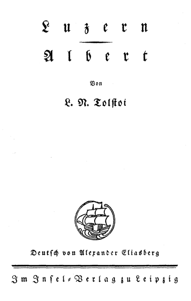

Deutsch von Alexander Eliasberg
Im Insel-Verlag zu Leipzig
Aus den Aufzeichnungen des Fürsten D. Nechljudow
den 8. Juli
Gestern abend bin ich in Luzern angekommen und im besten hiesigen Hotel, dem Schweizerhof, abgestiegen. »Luzern ist eine alte Kantonsstadt, am Ufer des Vierwaldstätter Sees gelegen,« sagt Murray, »einer der romantischsten Orte der Schweiz; in dieser Stadt kreuzen sich drei wichtige Straßen; in nur einer Stunde Dampferfahrt liegt der Berg Rigi, dessen Gipfel eine der herrlichsten Aussichten der Welt bietet.«
Ich weiß nicht, ob das richtig ist oder nicht, doch auch die andern Reiseführer behaupten dasselbe; aus diesem Grunde gibt es hier eine Menge von Touristen aller Nationen, besonders aber Engländer.
Das prunkvolle fünfstöckige Haus des »Schweizerhof« ist erst vor kurzem am Kai, unmittelbar am See, erbaut worden, und zwar an derselben Stelle, wo sich in alten Zeiten eine hölzerne, krumme, überdachte Brücke mit Kapellen an den Ecken und Heiligenbildern an den Pfeilern befand. Nun hat man dank dem ungeheuren Andrang der Engländer und aus Rücksicht auf ihre Bedürfnisse, ihren Geschmack und ihr Geld die alte Brücke abgebrochen und an ihrer Stelle einen schnurgeraden Sockeldamm angelegt, auf dem Damm mehrere geradlinige viereckige, fünfstöckige Häuser erbaut, vor den Häusern aber zwei Reihen Linden gepflanzt und diese mit Pfählen gestützt. Zwischen den Linden hat man, wie es überall üblich ist, grün angestrichene Bänke verteilt. Das ist die Promenade; hier ergehen sich die Engländerinnen mit schweizerischen Strohhüten und die Engländer in ihren praktischen und bequemen Anzügen, und sie freuen sich alle ihrer Schöpfung. Es ist ja möglich, daß diese Kais und Häuser, Linden und Engländer sich irgendwo anders ganz hübsch machen würden; jedenfalls aber nicht hier, inmitten dieser seltsam majestätischen und zugleich unbeschreiblich harmonischen und weichen Landschaft.
Als ich in mein Zimmer hinaufkam und das auf den See gehende Fenster öffnete, wurde ich im ersten Augenblick von der Schönheit dieses Wassers, dieser Berge und dieses Himmels buchstäblich geblendet und erschüttert. Mich überkam eine innere Unruhe und das Bedürfnis, dem Überfluß dessen, was meine Seele erfüllte, irgendwie Ausdruck zu verleihen. Ich hatte in diesem Augenblick das Verlangen, irgend jemand zu umarmen, fest zu umhalsen, zu kitzeln und sogar zu zwicken und überhaupt mit ihm oder mit mir selbst irgend etwas ganz Ungewöhnliches anzufangen.
Es war in der siebenten Abendstunde. Den ganzen Tag hindurch hatte es geregnet, doch jetzt heiterte sich das Wetter auf. Vor meinem Fenster breitete sich zwischen den abwechslungsreichen grünen Ufern der See, blau wie brennender Schwefel, von zahllosen, als kleine Punkte erscheinenden Booten und ihren sich verziehenden Spuren belebt, unbeweglich, glatt, gleichsam erhaben; er zog sich, zwischen zwei ungeheuren Bergvorsprüngen eingeengt, in die Ferne, schmiegte sich dunkelnd an die übereinandergetürmten Berge, Wolken und Gletscher und verlor sich zwischen ihnen. Im Vordergrunde lagen feuchte, hellgrüne, geschwungene Ufer mit Schilf, Wiesen, Gärten und Villen; weiter kamen dunkelgrüne, bewaldete Anhöhen mit Schloßruinen; den Hintergrund bildete die zusammengeballte, weiße und lilafarbene Gebirgskette mit seltsamen felsigen und mattweißen schneebedeckten Gipfeln; und alles war übergossen von einer zarten, durchsichtig blauen Luft und beleuchtet von den durch die zerfetzten Wolken hervorschießenden warmen Strahlen der untergehenden Sonne. Weder auf dem See, noch in den Bergen, noch am Himmel gab es eine einzige ununterbrochene Linie, eine einzige ungemischte Farbe, einen einzigen ruhigen Punkt: überall war Bewegung, Unsymmetrie, Phantastik, eine unaufhörliche Vermengung und Verschiedenheit der Schatten und Linien, und zugleich die Ruhe, Milde, Einheit und Notwendigkeit des Schönen. Und mitten in dieser unbestimmten, verworrenen und freien Schönheit lag unmittelbar vor meinem Fenster der dumme, künstliche weiße Kai mit den gestützten Lindenbäumchen und den grünen Bänken; alle diese armseligen und banalen Werke von Menschenhand waren nicht wie die fernen Villen und Ruinen in der allgemeinen Harmonie und Schönheit aufgegangen, sondern widersprachen ihr auf die gröblichste Weise. Mein Blick stieß sich immer unwillkürlich an diese gräßliche gerade Linie des Dammes, und ich wollte sie zurückstoßen und vernichten wie einen schwarzen Fleck, der einem auf der Nase unter dem Auge sitzt; doch der Kai mit den lustwandelnden Engländern blieb immer an seinem Platz, und ich begann mir unwillkürlich einen Gesichtspunkt zu suchen, von dem aus ich ihn nicht zu sehen brauchte. Es gelang mir auch, meine Augen derart einzustellen, und so genoß ich bis zur Mahlzeit ganz allein jenes unvollständige, doch um so süßere Gefühl, das der Mensch empfindet, wenn er sich ganz allein dem Naturgenuß ergibt.
Um halb acht rief man mich zum Essen. Im großen, prächtig ausgestatteten Parterresaal waren zwei lange Tische für mindestens hundert Personen gedeckt. Etwa drei Minuten dauerte das stumme Erscheinen der Gäste, das Rauschen der Damenkleider, die leichten Schritte und die leisen Unterredungen mit den ungemein höflichen und eleganten Kellnern; vor allen Gedecken saßen bald Herren und Damen, die alle sehr elegant, sogar kostbar und überhaupt ungemein sorgfältig gekleidet waren. Wie überall in der Schweiz, bestand der größte Teil der Tischgesellschaft aus Engländern; daher bestimmten den allgemeinen Ton der Table d'hote eine strenge Beachtung der gesetzlich anerkannten Anstandsregeln, eine Verschlossenheit, die nicht auf dem Stolz der Gäste, sondern auf dem Mangel eines Bedürfnisses, sich einander zu nähern, beruhte, und das Behagen, das jeder für sich in der bequemen und angenehmen Befriedigung seiner Bedürfnisse fand. Überall schimmerten schneeweiße Spitzen, schneeweiße Kragen, schneeweiße, echte und falsche Zähne und schneeweiße Gesichter und Hände. Doch die Gesichter, von denen viele auffallend schön sind, drücken nur das Bewußtsein des eigenen Wohlbehagens aus und einen vollständigen Mangel an Interesse für alles, was sie umgibt und sie nicht direkt berührt; die schneeweißen Hände mit den kostbaren Ringen und Mitaines bewegen sich nur, um den Kragen gerade zu richten, den Braten zu zerschneiden und Wein einzuschenken: alle diese Bewegungen drücken keine Spur von Seele aus. Die Angehörigen einzelner Familien tauschen nur ab und zu leise Bemerkungen aus über den angenehmen Geschmack einer Speise oder eines Weines und über die schöne Aussicht vom Rigi. Die alleinstehenden Herren und Damen sitzen schweigsam nebeneinander, ohne einander anzublicken. Wenn von diesen hundert Personen zwei zusammen reden, so kann man wetten, daß das Gespräch entweder vom Wetter oder von der Besteigung des Rigi handelt. Messer und Gabel bewegen sich kaum hörbar auf den Tellern, man nimmt sich höchst bescheidene Portionen und ißt Erbsen und andere Gemüse ausschließlich mit der Gabel; die Kellner, die sich unwillkürlich der allgemeinen Schweigsamkeit unterordnen, fragen im Flüsterton, welchen Wein man haben möchte. Bei solchen Mahlzeiten empfinde ich stets ein schweres und unangenehmes und gegen das Ende – trauriges Gefühl. Ich habe immer den Eindruck, als ob ich etwas verbrochen hätte und dafür gestraft werden müßte, wie in meiner Kindheit, wo man mich für irgendeinen Streich auf einen Stuhl setzte und ironisch sagte: »So, jetzt ruhe dich aus, mein Lieber!« – während in meinen Adern junges, wildes Blut pochte und aus dem Nebenzimmer die ausgelassenen Schreie meiner Brüder klangen. Früher versuchte ich immer, mich gegen das drückende Gefühl, das ich bei solchen Mahlzeiten empfand, aufzulehnen, doch vergeblich: alle diese leblosen Gesichter haben auf mich einen unwiderstehlichen Einfluß, und ich werde ebenso leblos wie sie. Ich will nichts, ich denke an nichts, ich beobachte sogar nicht. Anfangs machte ich noch Versuche, meine Tischnachbarn ins Gespräch zu ziehen; zur Antwort bekam ich aber nur die gleichen Phrasen, die wohl zum hunderttausendsten Mal auf der gleichen Stelle und zum hunderttausendsten Mal vom gleichen Menschen wiederholt wurden. Dabei sind sie alle doch sicher nicht dumm und nicht gefühllos; viele von diesen erfrorenen Menschen haben wohl das gleiche Innenleben wie ich, und manche ein viel interessanteres und komplizierteres. Warum verzichten sie dann auf einen der größten Genüsse im Leben, auf den Genuß aneinander, den Genuß am Menschen?
Wie anders war es doch in unserer Pariser Pension, wo wir etwa zwanzig Personen von den verschiedensten Nationen, Berufen und Eigenschaften uns unter dem Einflüsse der französischen Geselligkeit an der Table d'hote wie zu einem Vergnügen zusammenfanden! Dort wurde jedes, an irgendeinem Tischende begonnenes, mit Scherzen und Wortspielen gewürztes Gespräch, wenn auch in gebrochener Sprache geführt, sofort zu einem allgemeinen. Ein jeder redete, was ihm gerade in den Kopf kam, ohne sich um die Richtigkeit der Sprache zu kümmern; wir hatten dort unsern Philosophen, unsern Streithahn, unsern bel esprit und unsern Narren, eine ständige Zielscheibe für spöttische Bemerkungen; alles hatten wir gemeinsam. Gleich nach dem Essen rückten wir den Tisch beiseite und tanzten im Takt und auch nicht im Takt bis zum Abend Polka. Wir gaben uns dort zwar etwas kokett, nicht sehr klug und würdevoll, aber immerhin menschlich. Die spanische Gräfin mit ihren romantischen Abenteuern, der italienische Abbate, der nach dem Essen Stellen aus der Göttlichen Komödie zu deklamieren pflegte, der amerikanische Doktor, der Zutritt zu den Tuilerien hatte, der junge Dramatiker mit der langen Mähne, die Pianistin, die nach ihrer eigenen Behauptung die schönste Polka der Welt komponiert hatte, und die unglückliche schöne Witwe, die an jedem Finger drei Ringe trug – wir alle unterhielten zu einander durchaus menschliche, wenn auch etwas oberflächliche, doch freundschaftliche Beziehungen und haben teils flüchtige, teils aufrichtig herzliche Erinnerungen aneinander bewahrt. Wenn ich aber bei einer englischen Table d'hote auf alle diese Spitzen, Bänder, Ringe, pomadisierten Haare und seidenen Kleider sehe, denke ich immer daran, wie vielen lebenden Frauen dieser Schmuck und Tand Glück geben würde und die Fähigkeit, auch andere zu beglücken. So seltsam ist der Gedanke, daß hier so viele Freunde und Liebende, glückliche Freunde und glücklich Liebende, ohne es selbst zu wissen, vielleicht dicht beisammen sitzen. Und sie werden es, Gott weiß warum, nie erfahren und werden nie einander das Glück schenken, das sie so leicht schenken könnten und nach dem sie alle so sehr dürsten.
Am Ende der Mahlzeit überkam mich wie immer eine traurige Stimmung; ich ließ das Dessert stehen, verließ die Tafel und begab mich in ziemlich schlechter Laune in die Stadt. Die engen, schmutzigen, unbeleuchteten Gassen, die Läden, die eben geschlossen wurden, die Begegnungen mit betrunkenen Arbeitern und mit Frauen, die Wasser holten, und anderen Frauen, die bessere Hüte aufhatten und, sich fortwährend umblickend, an den Mauern entlang durch die Gassen huschten, vermochten meine düstere Stimmung nicht zu verscheuchen, ja, sie verstärkten sie nur. Es war schon ganz finster, als ich, ohne mich umzublicken und ohne an etwas zu denken, nach Hause ging, in der Hoffnung, mich durch den Schlaf von der düsteren Stimmung zu befreien. Ich empfand eine schreckliche innere Kälte, jenes drückende Gefühl von Einsamkeit, wie es uns oft ohne jeden ersichtlichen Grund überfällt, wenn wir auf einer Reise nach einem neuen Ort kommen.
Als ich, ohne nach rechts und links zu schauen, über den Kai zum Schweizerhof schritt, wurde ich plötzlich von den Tönen einer seltsamen, doch angenehmen und reizvollen Musik überrascht. Diese Töne übten auf mich eine augenblickliche, belebende Wirkung aus. Es war, als ob ein helles, heiteres Licht in meine Seele dränge. Mir ward so lustig und so angenehm zu Mute. Mein bereits eingeschlummertes Interesse erwachte und richtete sich von neuem auf alle mich umgebenden Gegenstände und Erscheinungen. Die Schönheit der Nacht und des Sees, gegen die ich erst eben gleichgültig gewesen, überraschte mich ganz plötzlich, wie etwas ganz Neues. Unwillkürlich erfaßte ich in einem Augenblick alles: den regnerischen Himmel mit den grauen Wolkenfetzen auf dem dunklen Blau, vom aufgehenden Mond beleuchtet; den dunkelgrünen spiegelglatten See mit den sich in ihm spiegelnden Lichtern; die fernen nebelgrauen Berge; das Quaken der Frösche aus Fröschenburg und die taufrischen Schreie der Wachteln am anderen Ufer. Doch unmittelbar vor mir, dort, wo die Töne klangen, an der Stelle, auf die sich mein Interesse hauptsächlich richtete, bemerkte ich im Halbdunkel mitten in der Straße ein Häuflein Menschen, die sich im Halbkreise drängten, und in einiger Entfernung vor ihnen ein kleines, schwarzgekleidetes Männchen. Hinter diesen Menschen hoben sich gegen den dunklen, grauen und blauen zerrissenen Himmel einige schwarze Pappeln des Gartens und die zu beiden Seiten des alten Domes ragenden strengen Türme ab.
Ich kam näher, und die Töne wurden deutlicher. Ich konnte ganz klar die fernen Akkorde einer Gitarre unterscheiden, die lieblich in der abendlichen Luft nachzitterten, und einige Stimmen, die, einander ablösend, nicht das Thema sangen, sondern nur die Hauptstellen des Themas unterstrichen und hervorhoben. Das Thema war eine Art anmutige, graziöse Masurka. Die Stimmen klangen bald in der Nähe und schienen bald aus der Ferne zu kommen; bald hörte ich einen Tenor, bald einen Baß und bald eine Fistelstimme mit gurrenden Tiroler Jodlern. Es war kein Lied, sondern die meisterhafte Skizze zu einem solchen. Ich konnte gar nicht verstehen, was es war; doch es war schön. Die wollüstigen, leisen Akkorde der Gitarre, die anmutige, leichte Melodie und die einsame Figur des schwarzen Männchens inmitten der phantastischen Szenerie des dunkelnden Sees, des durch die Wolken hindurch schimmernden Mondes, der beiden schweigsam in die Luft ragenden Türme und der schwarzen Pappeln des Gartens – all dies war seltsam, doch unaussprechlich schön, oder es schien mir wenigstens so.
Alle die verworrenen zufälligen Eindrücke des Lebens gewannen für mich plötzlich Bedeutung und Reiz. In meiner Seele war gleichsam eine frische, duftende Blume aufgegangen. An Stelle der Müdigkeit, der Zerstreutheit und der Gleichgültigkeit gegen alle Dinge in der Welt, die ich noch vor einer Minute empfunden hatte, spürte ich plötzlich ein Bedürfnis nach Liebe, eine Fülle der Hoffnung und eine grundlose Lebensfreude. Was soll ich mir noch wünschen, was soll ich noch verlangen? – sagte ich mir unwillkürlich. Da ist sie ja, die Schönheit und die Poesie, und sie tritt dir von allen Seiten entgegen. Atme sie mit vollen Zügen ein, genieße sie, soviel dir nur deine Kraft erlaubt. Was willst du noch mehr? Alles ist dein, alles ist herrlich ...
Ich trat näher heran. Das kleine Männchen schien ein fahrender Tiroler zu sein. Er stand vor den Fenstern des Hotels, ein Bein vorgestreckt, den Kopf zurückgeworfen, und sang zur Gitarre, beständig die Stimme wechselnd, ein graziöses Lied. Ich empfand sofort Sympathie mit diesem Menschen und Dankbarkeit für die innere Wandlung, die er in mir hervorgerufen hatte. Der Sänger war, soviel ich bemerken konnte, mit einem abgetragenen schwarzen Rock bekleidet, hatte kurzgeschorenes Haar und eine einfache Mütze, wie sie die Handwerker tragen. In seiner Kleidung war nichts Künstlerisches, doch seine ungezwungene, kindlich ausgelassene Haltung und sein Gebärdenspiel boten bei seinem kleinen Wuchs einen rührenden und zugleich drolligen Anblick. In der Einfahrt, in den Fenstern und auf den Balkons des glänzend erleuchteten Hotels standen die Damen in prächtigen Toiletten, mit bauschigen Röcken, die Herren mit ihren blendend weißen Kragen, der Portier und die Lakaien in goldgestickten Livreen; auf der Straße, im Halbkreise der Menge und etwas weiter zwischen den Linden der Kaianlagen, hatten sich die elegant gekleideten Kellner, die Köche mit ihren weißen Mützen und Jacken, junge Mädchen, die sich umschlungen hielten, und viele Spaziergänger versammelt. Sie alle schienen dasselbe Gefühl zu empfinden, das auch ich hatte. Sie standen schweigend um den Sänger herum und hörten ihm andächtig zu. Alles war still, und nur in den Pausen zwischen den einzelnen Strophen kamen aus der Ferne über den See her Hammerschläge und die Triller der Frösche von Fröschenburg, von den feuchten eintönigen Schreien der Wachteln übertönt.
Der kleine Mann mitten auf der dunklen Straße schmetterte wie eine Nachtigall Strophe um Strophe, Lied um Lied. Obwohl ich nun dicht an seiner Seite stand, gewährte mir sein Gesang nach wie vor großen Genuß. Seine Stimme war nicht groß, doch ungemein angenehm; der feine Geschmack, die Anmut und das Gefühl für Rhythmus, mit welchen er seine Stimme beherrschte, waren durchaus ungewöhnlich und zeugten von einer großen natürlichen Begabung. Den Refrain zu jedem Couplet sang er immer anders, und es war offenbar, daß er alle diese graziösen Variationen ganz frei und aus dem Stegreif brachte.
Durch die Menge – wie oben im Schweizerhof, so auch unten in den Anlagen – ging oft ein beifälliges Flüstern; sonst herrschte andächtiges Schweigen. Auf den Balkons und in den Fenstern erschienen immer neue schön gekleidete Herren und Damen, die im Glanze der Lichter in malerischen Posen an den Brüstungen lehnten. Die Spaziergänger blieben stehen, und im Schatten, auf dem Kai, hatten sich unter den Linden überall Gruppen von Herren und Damen gebildet. In meiner Nähe standen, etwas abseits von der großen Menge, ein Lakai und ein Koch; beide sahen wie Aristokraten aus und rauchten Zigarren. Der Koch gab sich ganz der Wirkung der Musik hin und nickte bei jedem hohen Fistelton begeistert und fragend dem Lakaien zu; er stieß ihn ab und zu mit dem Ellbogen an, als hätte er sagen wollen: »Nun, was sagst du zu diesem Gesang, he?« Der Lakai, dessen breites Lächeln davon zeugte, daß auch er den großen Genuß empfand, antwortete auf die Püffe des Kochs mit einem Achselzucken, welches besagen sollte, daß es gar nicht so leicht sei, ihn in Erstaunen zu setzen, und daß er in seinem Leben schon manches Schönere gehört habe.
In einer Pause, als der Sänger sich räusperte, fragte ich den Lakaien, wer der Sänger sei und ob er oft hierher käme.
»So an die zwei Mal im Sommer,« erwiderte der Lakai. »Er ist aus dem Kanton Aargau, er zieht so bettelnd umher.«
»Gibt es viele Leute von dieser Art?« fragte ich.
»Ja, ja,« antwortete der Lakai, der meine Frage nicht sofort begriffen hatte. Nach einigen Augenblicken begriff er sie erst und fügte hinzu: »Nein, er ist hier der einzige, andere gibt es nicht.«
Das Männchen hatte eben sein erstes Lied beendet; es drehte geschickt die Gitarre um und machte irgendeine Bemerkung in seinem Schweizerdeutsch, die ich nicht verstehen konnte, die aber im Publikum Lachen hervorrief.
»Was hat er eben gesagt?« fragte ich.
»Er sagt, daß ihm die Kehle ausgetrocknet sei und daß er gern einen Schluck Wein getrunken hätte,« übersetzte mir der Lakai.
»Er trinkt wohl gerne über den Durst?«
»Alle diese Leute sind ja vom gleichen Schlag,« erwiderte der Lakai lächelnd und mit der Hand auf den Sänger zeigend.
Der Sänger nahm die Mütze ab und ging, die Gitarre schwingend, auf das Haus zu. Er warf den Kopf zurück und wandte sich an die Herrschaften, die an den Fenstern und auf dem Balkon standen. » Messieurs et mesdames,« sagte er mit halb italienischem und halb deutschem Akzent und in dem Tone, in dem sich Gaukler gewöhnlich an ihr Publikum wenden: » si vous croyez, que je gagne quelque chose, vous vous trompez: je ne suis qu'un pauvre tiaple.« Er hielt inne und wartete; da ihm aber niemand etwas gab, schwang er wieder die Gitarre und fuhr fort: » A présent, messieurs et mesdames, je vous chanterai l'air du Righi.« Das Publikum oben verhielt sich schweigend, blieb aber in Erwartung des neuen Liedes stehen; und das Publikum unten lachte, wohl aus dem Grunde, weil er sich so sonderbar ausgedrückt hatte und weil man ihm nichts gegeben hatte. Ich schenkte ihm einige Centimes. Er warf die Münzen geschickt aus der einen Hand in die andere, steckte sie in die Westentasche, setzte sich seine Mütze wieder auf und stimmte jenes graziöse Liedchen an, das er l'air du Righi genannt hatte. Dieses Lied, das er für den Schluß aufgespart hatte, war noch schöner als alle die vorhergehenden; das Publikum, das inzwischen bedeutend angewachsen war, äußerte großen Beifall. Er war zu Ende. Wieder schwang er die Gitarre, nahm die Mütze ab, hielt sie vor sich hin, näherte sich auf zwei Schritte den Fenstern und sagte wieder den unverständlichen Satz: » Messieurs er mesdames, si vous croyez, que je gagne quelque chose«, den er offenbar für sehr geistreich und fein ersonnen hielt. Ich merkte aber in seiner Stimme und seinen Bewegungen eine gewisse Unsicherheit und kindliche Scheu, die bei seinem kleinen Wuchs einen besonders starken Eindruck machten. Das elegante Publikum lehnte noch immer im Glanze der Lampen malerisch an den Fenstern und Balkons; die einen unterhielten sich artig mit gedämpfter Stimme, offenbar über den Sänger, der mit ausgestreckter Hand vor ihnen stand; andere musterten aufmerksam und interessiert seine kleine dunkle Gestalt; auf einem der Balkons klang das helle und lustige Lachen eines jungen Mädchens. In der Menge auf dem Kai wurde immer mehr und lauter gesprochen und gelacht. Der Sänger wiederholte seinen Satz zum dritten Male, doch mit noch schwächerer Stimme; er sprach ihn sogar nicht zu Ende und streckte wieder seine Hand mit der Mütze aus, ließ sie aber sofort sinken. Und wieder fand sich unter diesen hundert glänzend gekleideten Menschen, die sich versammelt hatten, um ihm zu lauschen, niemand, der ihm auch nur einen Heller zugeworfen hätte. Die Menge unten brach in ein grausames Lachen aus. Der kleine Sänger schrumpfte gleichsam zusammen, nahm seine Gitarre in die linke Hand, lüftete mit der rechten die Mütze und sagte: » Messieurs et mesdames, je vous remercie er je vous souhaite une bonne nuit!« Dann setzte er die Mütze wieder auf. Die Menge lachte wie besessen. Die schönen Herren und Damen zogen sich allmählich in ruhigem Gespräch von den Balkons und Fenstern zurück. In den Anlagen begann man wieder zu promenieren. Die Straße, die während des Gesanges verstummt war, belebte sich wieder; nur einige Menschen beobachteten noch aus der Entfernung den Sänger und lachten. Ich hörte, wie das Männchen etwas in den Bart brummte; dann wandte er sich um, wurde noch kleiner und entfernte sich mit schnellen Schritten in der Richtung zur Stadt. Die lustigen Spaziergänger, die ihn aus der Ferne beobachtet hatten, folgten ihm lachend in einiger Entfernung ...
Ich wurde ganz verlegen. Ich begriff nicht, was das Ganze zu bedeuten hatte, und starrte, immer auf demselben Fleck stehend, in die Finsternis, auf den kleinen Mann, der mit großen Schritten auf die Stadt zuging, und auf die lachenden Spaziergänger, die ihm folgten. Ich empfand ein schmerzvolles Gefühl von Erbitterung und Scham für diesen kleinen Mann, diese Menge und für mich selbst, als ob ich es wäre, der um Geld gebettelt und nichts bekommen hatte, den man ausgelacht hatte. Ich ging mit beklommenem Herzen, ohne mich umzublicken, schnell nach Hause, auf den Schweizerhof zu. Ich gab mir noch keine Rechenschaft über die Gefühle, die mich bewegten; etwas Schweres erfüllte und bedrückte meine Seele und fand keinen Ausfluß.
In der prachtvoll erleuchteten Einfahrt begegnete ich dem Portier, der höflich beiseite trat, und einer englischen Familie. Der starke, wohlgestaltete, hochgewachsene Mann mit dem schwarzen, englischen Backenbart, schwarzem Hut, einem Plaid über dem Arme und einen wertvollen Spazierstock in der Hand, führte träge und selbstbewußt eine Dame, in einem grauen seidenen Kleid mit kostbaren Spitzen und einem Häubchen mit leuchtenden Bändern, am Arm. An ihrer Seite ging ein hübsches, frisches junges Mädchen in einem graziösen Schweizer Hut mit einer Feder à la mousquetaire, unter dem weiche, lange, hellblonde Locken hervorquollen, ihr weißes Gesicht umrahmend. Voraus hüpfte ein zehnjähriges rotwangiges Mädchen mit vollen weißen Knien, die unter den feinen Spitzenhöschen hervorschimmerten.
»Welch eine herrliche Nacht!« sagte die Dame mit süßer, glücklicher Stimme, als ich an ihr vorüberging.
»Ach!« brummte der träge Engländer, dem das Leben offenbar so sehr behagte, daß er sogar zum Sprechen zu faul war. Sie alle hatten, so schien es, ein so ruhiges, bequemes, reinliches und leichtes Leben; ihre Bewegungen und Gesichter drückten eine solche Gleichgültigkeit gegen jedes fremde Leben aus und eine so unerschütterliche Überzeugung davon, daß der Portier vor ihnen beiseite treten und sich verbeugen würde, daß sie auf ihren Zimmern saubere und bequeme Betten finden würden, daß all dies so sein müsse, und daß sie auf all dies ein Recht hätten – daß ich ihnen im Geiste unwillkürlich den fahrenden Sänger gegenüberstellte, der nun müde und vielleicht auch hungrig, beschämt vor der lachenden Menge floh; nun begriff ich, was mir so schwer auf dem Herzen lastete, und mich packte unbeschreiblicher Zorn gegen alle diese Menschen. Ich ging zweimal an dem Engländer vorbei, ohne ihm auszuweichen, und stieß ihn beide Mal mit großem Genuß mit dem Ellbogen an. Dann verließ ich das Hotel und lief in der Dunkelheit in der Richtung nach der Stadt zu, in der der kleine Mann verschwunden war.
Ich holte drei Männer ein, die zusammen gingen, und fragte sie, ob sie nicht den Sänger gesehen hätten; sie zeigten ihn mir lachend: er ging vor ihnen, ganz allein, mit schnellen Schritten; niemand näherte sich ihm, und mir schien, daß er noch immer etwas erregt vor sich hin murmelte. Ich holte ihn ein und schlug ihm vor, mit mir irgendwo einzukehren und eine Flasche Wein zu trinken. Er ging noch immer schnell weiter und blickte mich unzufrieden an; als er endlich begriffen hatte, was ich von ihm wollte, blieb er stehen.
»Nun, wenn Sie so freundlich sind, nehme ich die Einladung an,« sagte er mir. »Gleich hier in der Nähe gibt es ein kleines Café; es ist recht einfach, da könnten wir einkehren,« fügte er hinzu, auf eine Weinbude zeigend, die noch offen war.
Seine Worte vom »einfachen« Café brachten mich unwillkürlich auf den Gedanken, mit ihm nicht in das einfache Café, sondern ins Hotel Schweizerhof zu gehen, wo sich alle die Leute befanden, die ihm zugehört hatten. Obwohl er einige Mal scheu und schüchtern ablehnte, in den Schweizerhof zu gehen, weil es dort zu elegant sei, setzte ich meinen Willen doch durch. Er stellte sich so, als ob er in keiner Weise verlegen sei, schwang lustig die Gitarre und ging mit mir über den Kai zurück. Kaum hatte ich mich dem Sänger angeschlossen, als einige müßige Spaziergänger näher heranrückten, um zu horchen, was ich mit ihm sprach; nun folgten sie uns, den Fall miteinander besprechend, bis zur Hoteleinfahrt, da sie offenbar vom Tiroler noch irgendeinen lustigen Auftritt erwarteten.
Ich bestellte beim ersten Kellner, dem ich im Flur begegnete, eine Flasche Wein. Der Kellner blickte uns lächelnd an und lief vorüber, ohne zu antworten. Der Oberkellner, an den ich mich mit der gleichen Bitte wandte, hörte mich aufmerksam an, musterte die kleine schüchterne Gestalt des Sängers vom Kopf bis zu den Füßen und sagte dann mit strenger Miene dem Portier, er möchte uns in den Saal links geleiten. Dieser Saal war die Schwemme für gewöhnliches Volk. In der Ecke war eine bucklige Magd mit dem Aufwaschen von Geschirr beschäftigt, und die ganze Einrichtung bestand hier aus einfachen hölzernen Tischen ohne Tischdecken und einfachen Bänken. Der Kellner, der uns bedienen sollte, betrachtete uns mit nachsichtigem, höhnischem Lächeln und unterhielt sich, die Hände in den Taschen, mit der buckligen Küchenmagd. Er wollte uns offenbar zu verstehen geben, daß er sich in bezug auf seine gesellschaftliche Stellung und seine sonstigen Eigenschaften so unendlich erhaben über den Sänger schätzte, daß es für ihn nicht nur nicht verletzend, sondern auch wirklich amüsant sei, uns zu bedienen.
»Befehlen der Herr gewöhnlichen Wein?« fragte er mich verständnisvoll, mit einem Seitenblick auf meinen Begleiter, die Serviette aus einer Hand in die andere werfend.
»Nein, Champagner, und vom Besten,« sagte ich, indem ich mich bemühte, eine möglichst stolze und majestätische Haltung anzunehmen. Doch weder der Champagner noch meine stolze, majestätische Haltung machten auf den Kellner Eindruck: er lächelte, blieb noch eine Weile stehen, betrachtete uns, sah ruhig auf seine goldene Uhr und ging mit langsamen Schritten, als ob er spazieren ginge, aus dem Zimmer. Nach einer Weile kam er mit dem bestellten Champagner und brachte zwei andere Lakaien mit. Zwei von ihnen setzten sich in die Ecke zur Küchenmagd und sahen uns vergnügt und belustigt, mit mildem Lächeln in den Zügen zu, wie Eltern, die den niedlichen Spielen ihrer niedlichen Kinder zusehen. Nur die bucklige Küchenmagd schien uns nicht höhnisch, sondern teilnahmsvoll zu betrachten. Obgleich es mir recht schwer und unangenehm war, mich mit dem Sänger unter dem Kreuzfeuer der Lakaienblicke zu unterhalten und ihn zu bewirten, gab ich mir doch Mühe, meine Sache möglichst unbefangen zu tun. Bei Licht konnte ich ihn besser sehen. Er war ein sehr kleiner, doch proportioniert gebauter, muskulöser Mann, beinahe ein Zwerg, mit borstigen schwarzen Haaren, immer feuchten, wimperlosen, großen, schwarzen Augen und einem winzigen Mund mit rührendem Ausdruck. Er hatte einen kurzen Backenbart, kurzes Haar, und seine Kleidung war höchst einfach und dürftig. Er war unsauber, zerlumpt, wettergebräunt und sah überhaupt wie ein schwer arbeitender Mensch aus. Man könnte ihn viel eher für einen armen Hausierer als für einen Künstler halten. Nur in seinen feuchten, glänzenden Augen und seltsam gefalteten Lippen lag etwas Originelles und Rührendes. Sein Alter konnte man auf fünfundzwanzig bis vierzig Jahre schätzen; in Wirklichkeit war er achtunddreißig Jahre alt.
Er berichtete mir gutmütig und bereitwillig, offenbar auch aufrichtig Folgendes von seinem Leben. Er stammte aus dem Aargau und hatte noch in früher Kindheit Vater und Mutter verloren; andere Verwandte hatte er nicht. Ein Vermögen hatte er nie besessen. Er war anfangs bei einem Schreiner in der Lehre gewesen, aber vor zweiundzwanzig Jahren hatte er den Knochenfraß in der Hand bekommen, was die Ausübung des Schreinerhandwerks unmöglich machte. Von Kind auf hatte er Neigung zum Gesang gehabt, und nun begann er zu singen. Die Fremden gaben ihm zuweilen ein paar Rappen. Er machte sich einen Beruf daraus, kaufte sich eine Gitarre, und so wandert er seit achtzehn Jahren durch die Schweiz und Italien und singt vor den Hotels. Sein ganzes Gepäck besteht aus der Gitarre und einem Beutel; in diesem hat er augenblicklich nur anderthalb Franken, die er heute noch für sein Nachtquartier und Abendessen ausgeben wird. Alljährlich, also bereits zum achtzehnten Male, durchwandert er alle besseren und von den Fremden bevorzugten Orte der Schweiz: Zürich, Luzern, Interlaken, Chamonix usw.; er geht über den St. Bernhard nach Italien und kehrt über den St. Gotthard und durch Savoyen zurück. In der letzten Zeit fällt ihm das Herumziehen schwer, denn der Schmerz in den Beinen, der von einer Erkältung herrührt und den er Gliedersucht nennt, wird von Jahr zu Jahr unerträglicher; auch seine Augen und seine Stimme werden schwächer. Trotzdem begibt er sich jetzt nach Interlaken, Aix-les-Bains und über den Kleinen St. Bernhard nach Italien, das er ganz besonders liebt; im allgemeinen scheint er mit seinem Leben recht zufrieden zu sein. Als ich ihn fragte, warum er immer in seine Heimat zurückkehre, ob er dort Verwandte oder ein eigenes Stück Land und ein Haus habe, faltete sich sein winziges Mündchen zu einem schelmischen Lächeln, und er sagte mir:
»Oui, le sucre est bon, il est doux pour les enfants!« und dabei blinzelte er den Lakaien zu.
Ich verstand nicht, was er damit sagen wollte, doch in der Gruppe der Lakaien begann man zu lachen.
»Ich habe ja nichts; würde ich denn sonst so umherziehen?« suchte er es mir zu erklären. »Ich gehe alljährlich nach Hause, weil es jeden Menschen doch immer nach der Heimat zieht.«
Und er wiederholte noch einmal mit schlauer und selbstzufriedener Miene den Satz: »Oui, le sucre est bon,« und begann gutmütig zu lachen. Die Lakaien waren sehr belustigt und lachten; nur die bucklige Magd blickte mit ihren großen gutmütigen Augen ernst auf den Sänger und hob ihm die Mütze auf, die er während des Gesprächs fallen gelassen hatte. Ich habe bemerkt, daß die fahrenden Sänger, Akrobaten und sogar Schwarzkünstler sich gerne Künstler nennen, und darum ließ ich einige Male im Gespräch mit dem Sänger die Bemerkung fallen, daß er eigentlich ein Künstler sei. Er wollte aber diesen Ehrentitel auf sich gar nicht beziehen, denn er betrachtete seine Tätigkeit einfach als ein Erwerbsmittel. Als ich ihn fragte, ob er selbst der Verfasser der Lieder sei, die er singe, wunderte er sich über die sonderbare Frage und antwortete, daß er nicht das Zeug dazu habe, und daß es lauter alte Tiroler Lieder seien.
»Wie ist es denn mit dem Rigi-Lied? Das kann doch unmöglich alt sein,« sagte ich.
»Das Rigi-Lied ist vor etwa fünfzehn Jahren verfaßt worden. In Basel lebte ein Deutscher, ein sehr kluger Mann, und er hat das Lied gemacht. Es ist ein ausgezeichnetes Lied! Er hat es, müssen Sie wissen, für die Fremden verfaßt.«
Und er begann mir den Text des Liedes, das mir so gut gefallen hatte, ins Französische zu übersetzen.
»Willst du auf den Rigi steigen,
So brauchst du bis Weggis keine Schuhe
(Denn man fährt mit dem Dampfschiff);
Von Weggis nimm dir einen großen Stock,
Nimm dir auch ein Mädchen untern Arm,
Trinke noch ein Gläschen Wein,
Sollst aber nicht zu viel trinken,
Denn wenn du Wein trinken willst.
Mußt du ihn dir zuvor verdienen ...
O, es ist ein ausgezeichnetes Lied!« schloß er.
Auch die Lakaien fanden wohl das Lied sehr schön, denn sie kamen alle näher heran.
»Und wer hat die Musik gemacht?« fragte ich.
»Niemand! Wissen Sie, um vor den Fremden zu singen, braucht man immer etwas Neues.«
Als man uns Eis brachte und ich meinem Gast ein Glas Champagner einschenkte, wurde er auf einmal verlegen und begann, auf die Lakaien schielend, unruhig auf seiner Bank hin und her zu rücken. Wir stießen auf das Wohl der Künstler an; er trank ein halbes Glas und hielt es für nötig, nachdenklich zu werden und tiefsinnig die Augenbrauen zu heben.
»Schon lange habe ich keinen so guten Wein getrunken, je ne vous dis que ça. Der Asti in Italien ist ja auch sehr gut, doch dieser ist noch viel besser. Ach ja, Italien! Schön ist es dort!« fügte er hinzu.
»Ja, dort versteht man die Musik und die Künstler zu schätzen,« sagte ich mit der Absicht, das Gespräch auf seinen Mißerfolg vor dem Schweizerhof zu bringen.
»Nein,« erwiderte er, »dort kann ich mit meiner Musik niemand erfreuen. Die Italiener sind ja selbst Musiker, wie es keine ähnlichen in der Welt gibt; meine Spezialität sind aber die Tiroler Lieder, und die sind auch in Italien etwas Neues.«
»Sind dort die Herrschaften freigebiger?« fuhr ich fort, denn ich wollte ihn zwingen, meinen Groll gegen die Bewohner des Schweizerhofs zu teilen. »Dort kann es wohl nie vorkommen, daß unter hundert reichen Leuten, die in einem teuren Hotel wohnen, sich niemand findet, der einem Künstler, dem sie alle gelauscht haben, etwas gibt?«
Meine Frage wirkte ganz anders, als ich es erwartet hatte. Es fiel ihm gar nicht ein, sich gegen die Leute zu empören; im Gegenteil: in meiner Bemerkung sah er nur einen Vorwurf gegen seine Begabung, die es nicht vermocht hatte, die Leute zu einer Belohnung hinzureißen; und er begann sich vor mir zu rechtfertigen.
»Nicht immer bekommt man viel,« sagte er. »Zuweilen, wenn man müde ist, hat man gar keine Stimme; so war ich auch heute neun Stunden unterwegs und habe fast den ganzen Tag gesungen; das ist wirklich nicht leicht! Und die vornehmen Herren haben manchmal auch gar keine Lust, Tiroler Lieder zu hören.«
»Aber trotzdem, wie kann man einem nichts geben?« wiederholte ich.
Er verstand meine Frage nicht.
»Ich meine nicht das,« sagte er. »Die Hauptsache ist, on est très serré pour la police, das meine ich. Nach den hiesigen republikanischen Gesetzen ist es uns verboten zu singen; in Italien dürfen wir aber singen, soviel wir wollen, niemand wird auch ein Wort sagen. Hier können sie es einem erlauben und verbieten; und wenn sie wollen, können sie einen auch ins Gefängnis sperren.«
»Ist es denn möglich?«
»Gewiß. Wenn man Sie einmal gewarnt hat und Sie trotzdem fortfahren zu singen, darf man Sie ins Gefängnis sperren. Ich hab schon einmal drei Monate gesessen,« sagte er lächelnd, als ob es eine seiner angenehmsten Erinnerungen wäre.
»Das ist ja schrecklich!« sagte ich. »Wofür denn?«
»Das ist hier so nach den neuen republikanischen Gesetzen,« fuhr er fort, immer mehr in Schwung kommend. »Sie wollen es gar nicht begreifen, daß auch der arme Mann irgendwie leben muß. Wenn ich kein Krüppel wäre, so würde ich gewiß arbeiten. So aber muß ich singen; schade ich denn jemand damit? Was soll das heißen? Der Reiche darf leben wie er will, doch ein pauvre tiaple, wie ich, soll gar nicht mehr leben dürfen? Was sind denn das für republikanische Gesetze? Wenn so, will ich nichts von der Republik wissen. Ich habe doch recht, Herr? Wir wollen keine Republik, wir wollen ... wir wollen einfach ... wir wollen ...« Er wurde etwas verlegen. »Wir wollen natürliche Gesetze.«
Ich schenkte ihm sein Glas voll.
»Sie trinken ja gar nicht,« sagte ich zu ihm.
Er ergriff das Glas und verneigte sich gegen mich.
»Ich weiß, was Sie wollen,« sagte er, ein Auge zusammenkneifend und mit dem Finger drohend. »Sie wollen mich betrunken machen und dann sehen, was ich anfangen werde; es wird Ihnen aber nicht gelingen.«
»Warum sollte ich Sie betrunken machen wollen?« sagte ich; »ich will Ihnen nur ein Vergnügen bereiten.«
Es tat ihm offenbar leid, daß er mich eben beleidigt hatte, indem er meine Absichten falsch deutete; er wurde verlegen, richtete sich halb auf und ergriff mich am Ellbogen.
»Nein, nein,« sagte er, mich flehend mit seinen glänzenden Augen anblickend; »ich habe nur gescherzt!«
Dann ließ er einen furchtbar komplizierten und verworrenen Satz los, den ich nicht verstehen konnte, der aber wohl besagen sollte, daß ich im Grunde doch ein guter Kerl sei.
» Je ne vous dis que ça!« schloß er.
In dieser Weise fuhr ich fort mit dem Sänger zu trinken und zu plaudern; und die Lakaien fuhren fort, uns ungeniert zu beobachten und sich, wie es mir vorkam, über uns lustig zu machen. Obwohl mich die Unterhaltung mit dem Sänger sehr interessierte, konnte ich doch für keinen Augenblick die Anwesenheit der Lakaien vergessen, und ich muß gestehen, daß ich mich darüber immer mehr ärgerte. Einer der Lakaien stand auf, kam näher und begann lächelnd von oben herab den Scheitel des kleinen Sängers zu fixieren. In mir war schon ohnehin ein großer Vorrat von Haß gegen die Bewohner des Schweizerhofs aufgespeichert, und nun stachelte mich diese Lakaiengesellschaft noch mehr auf. Der Portier kam, ohne die Mütze abzunehmen, ins Zimmer, setzte sich neben mich und stemmte die Ellbogen auf den Tisch. Dieser letztere Umstand reizte im höchsten Maße meinen Stolz und meinen Ehrgeiz und brachte den Zorn, der sich in mir während des Abends angesammelt hatte, zum Ausbruch. Warum grüßt mich der Portier so demütig vor der Einfahrt, wenn ich allein bin, und setzt sich jetzt so ungezwungen an meine Seite, da ich mit dem fahrenden Sänger sitze? Ich brannte vor heißem Zorn der Entrüstung, den ich bei mir so gerne sehe und den ich zuweilen sogar anfache, weil er beruhigend auf mich wirkt und mir, wenn auch für kurze Zeit, eine ungewöhnliche Elastizität, Energie und Kraft aller meiner physischen und moralischen Fähigkeiten verleiht.
Ich sprang auf.
»Worüber lachen Sie?« schrie ich den Lakaien an, und ich fühlte mein Gesicht erblassen und meine Lippen wie im Krampfe zucken.
»Ich lache ja gar nicht,« antwortete der Lakai, vor mir zurückweichend.
»Nein, Sie lachen über diesen Herrn! Wie unterstehen Sie sich überhaupt, hier zu sitzen, wenn Gäste im Lokal sind? Sofort aufstehen!« herrschte ich ihn an.
Der Portier brummte etwas in den Bart, stand auf und ging zur Tür.
»Wie unterstehen Sie sich, über diesen Herrn zu lachen und neben ihm zu sitzen, wo er der Gast ist und Sie der Lakai sind? Warum haben Sie heute bei der Table d'hote nicht über mich gelacht und sich nicht neben mich gesetzt? Weil er schlecht gekleidet ist und auf der Straße singt, nicht wahr? Und weil ich gut gekleidet bin? Er ist zwar arm, doch tausendmal besser als Sie, davon bin ich überzeugt, denn er beleidigt niemand, und Sie beleidigen ihn.«
»Ich habe ihm ja gar nichts getan, was fällt Ihnen ein!« erwiderte schüchtern mein Feind, der Lakai. »Hindere ich ihn denn, hier zu sitzen?«
Der Lakai verstand mich nicht, und mein schönstes Deutsch machte auf ihn nicht den geringsten Eindruck. Der grobe Portier versuchte den Lakaien in Schutz zu nehmen, doch ich fiel mit solcher Wut über ihn her, daß auch der Portier sich so stellte, als ob er mich nicht verstünde, und nur mit der Hand abwinkte. Aber die bucklige Magd – ich weiß nicht, ob sie meine Ansicht teilte, oder nur meinen gereizten Zustand bemerkt hatte und einen Skandal befürchtete – nahm für mich Partei und versuchte, sich zwischen mich und den Portier zu drängen; sie redete ihm zu, er möchte doch schweigen, weil ich recht hätte, und bat mich, mich zu beruhigen. »Der Herr hat recht! Sie haben recht!« sagte sie in einem fort. Der Sänger machte ein unglückliches, erschrecktes Gesicht, begriff anscheinend nicht, warum ich so wütete und was ich wollte, und bat mich, möglichst gleich von hier fortzugehen. Doch der Haß und die Beredsamkeit loderten in mir immer stärker. Alles kam mir wieder in den Sinn: die Menge, die über ihn gelacht hatte, die Zuhörer, die ihm nichts gegeben hatten, und ich wollte mich um nichts in der Welt beruhigen. Ich glaube sogar, wenn die Kellner und der Portier nicht so nachgiebig gewesen wären, so hätte ich mit ihnen mit Hochgenuß zu raufen begonnen oder irgendein wehrloses englisches Fräulein mit meinem Stock über den Kopf geschlagen. Wäre ich in diesem Augenblick in Sewastopol gewesen, so hätte ich mich mit Wonne mit Säbel und Bajonett gegen die englischen Laufgräben gestürzt.
»Und warum haben Sie mich und den Herrn in diesen und nicht in jenen Saal geführt?« fragte ich den Portier, indem ich ihn bei der Hand festhielt, damit er mir nicht entrinne. »Was für ein Recht hatten Sie, nach dem Äußeren des Herrn zu schließen, daß er in diesem und nicht in jenem Saal sitzen muß? Sind nicht im Hotel alle Leute, die ihre Zeche bezahlen, gleich? Und zwar nicht nur in einer Republik, sondern in der ganzen Welt? Eure lausige Republik! ... So sieht eure Gleichheit aus! Sie würden sich ja nie unterstehen, einen Engländer in dieses Zimmer zu führen, einen von jenen, die diesem Herrn umsonst zugehört haben, d. h. ihm jeder einige Centimes gestohlen haben, die sie ihm hätten geben müssen. Wie haben Sie sich unterstehen können, uns diesen Saal anzuweisen?«
»Der andere Saal ist jetzt geschlossen,« antwortete der Portier.
»Nein,« fuhr ich ihn an, »es ist nicht wahr, der Saal ist gar nicht geschlossen.«
»Ich weiß nur, daß Sie lügen.«
Der Portier wandte sich halb weg.
»Was ist da noch viel zu reden!« brummte er.
»Nein, nicht reden will ich,« schrie ich wieder, »ich will, daß Sie mich sofort in den andern Saal führen!«
Trotz des Zuredens der Buckligen und aller Bitten des Sängers, lieber nach Hause zu gehen, ließ ich den Oberkellner kommen und begab mich mit meinem Gast in den andern Saal. Als der Oberkellner meine zornige Stimme hörte und mein erregtes Gesicht sah, wagte er mir nicht zu widersprechen und sagte mit verächtlicher Höflichkeit, ich möchte gehen, wohin es mir beliebt. Ich konnte dem Portier seine Lüge nicht beweisen, denn er hatte sich zurückgezogen, noch ehe ich den anderen Saal betrat.
Der Saal war tatsächlich offen und erleuchtet, und an einem der Tische saß ein englisches Paar beim Abendessen. Obwohl man uns einen besonderen Tisch angewiesen hatte, setzte ich mich mit dem schmierigen Sänger an den Tisch der Engländer und befahl, uns die noch nicht ganz geleerte Flasche herzubringen.
Die Engländer blickten den kleinen Sänger, der mehr tot als lebendig neben mir saß, erst verwundert und dann gehässig an; dann tuschelten sie miteinander, die Dame stieß ihren Teller fort, rauschte mit ihrem Seidenkleid, und beide verließen den Saal. Durch die Glastüre konnte ich sehen, wie der Engländer, aufs höchste erbost, auf den Kellner einsprach, fortwährend mit der Hand auf uns zeigend. Der Kellner steckte den Kopf durch die Türe und blickte in den Saal. Ich erwartete mit Wonne, daß man kommen würde, um uns hinauszuwerfen, und daß ich dann Gelegenheit haben würde, meinen ganzen Zorn gegen sie auszulassen. Doch zum Glück ließ man uns, wie unangenehm es mir auch war, in Ruhe.
Der Sänger, der vorhin nicht trinken wollte, trank jetzt eilig den ganzen Wein aus, der noch in der Flasche geblieben war, um so schnell als möglich fortgehen zu dürfen. Doch er bedankte sich, wie es mir schien, aufrichtig für die Bewirtung. Seine feuchten Augen wurden noch feuchter und glänzender, und er drückte mir seinen Dank in einem höchst seltsamen und verworrenen Satze aus. Seine Worte, mit denen er beiläufig sagen wollte, daß, wenn alle Leute die Künstler ebenso verehren würden wie ich, er es viel besser haben würde, und daß er mir alles Glück wünsche, gefielen mir trotzdem sehr gut. Wir traten zusammen in den Flur hinaus. Da standen die Lakaien und mein Feind, der Portier, der sich über mich zu beschweren schien. Sie alle sahen auf mich wie auf einen Verrückten. Ich ließ den kleinen Sänger ganz nahe an allen diesen Leuten vorbeikommen, zog dann, mit aller Ehrfurcht und Hochachtung, die ich nur auszudrücken vermochte, den Hut und drückte ihm die Hand mit dem steifen Finger. Die Lakaien taten so, als ob sie mir nicht die geringste Beachtung schenkten. Nur einer von ihnen brach in ein sardonisches Lachen aus.
Als der Sänger unter vielen Verbeugungen Abschied genommen hatte und in der Dunkelheit verschwunden war, begab ich mich auf mein Zimmer: ich wollte alle diese Eindrücke und die dumme kindliche Wut, die mich so unerwartet überkommen hatte, im Schlafe vergessen. Da ich mich doch zu sehr erregt fühlte, um einzuschlafen, begab ich mich wieder auf die Straße, um so lange spazieren zu gehen, bis ich mich beruhigt haben würde; ich hatte dabei, offen gesagt, noch die unklare Hoffnung, noch einmal mit dem Portier, den Lakaien oder dem Engländer zusammenzustoßen und ihnen die ganze Grausamkeit und besonders die Ungerechtigkeit ihres Gebarens zu beweisen. Doch außer dem Portier, der sich von mir sofort wegwandte, begegnete ich niemand, und so begann ich ganz allein auf dem Kai auf und ab zu gehen.
»Das ist also das sonderbare Schicksal der Poesie!« sagte ich mir, als ich mich einigermaßen beruhigt hatte. »Alle lieben sie, alle suchen sie, alle streben nach ihr im Leben, und doch will niemand ihre Macht anerkennen, sie als das höchste Gut dieser Welt würdigen. Niemand schätzt diejenigen, die dieses Gut den Menschen vermitteln, und niemand weiß ihnen Dank. Fragt doch einmal, wen ihr wollt, fragt alle Bewohner des Schweizerhofs, welches das höchste Gut in der Welt ist, und alle oder mindestens neunundneunzig von hundert werden euch mit einem sardonischen Lächeln sagen, daß das höchste Gut auf Erden das Geld sei. Man wird euch sagen: ›Vielleicht gefällt Ihnen dieser Gedanke nicht, vielleicht stimmt er mit Ihren erhabenen Idealen nicht überein, was soll man aber tun, wenn das Menschenleben schon einmal so eingerichtet ist, daß nur das Geld den Menschen glücklich machen kann? Wir können ja unseren Geist nicht hindern, die Welt so zu sehen, wie sie ist,‹ wird man noch hinzufügen, ›das heißt: die Wahrheit zu sehen.‹ Wie armselig ist das Glück, das ihr euch wünscht, wie unglücklich seid ihr, die ihr nicht wißt, was euch not tut ... Warum habt ihr alle eure Heimat, eure Familien, eure Geldgeschäfte und Berufe verlassen und euch in diesem kleinen schweizerischen Städtchen Luzern zusammengedrängt? Warum seid ihr heute abend alle auf die Balkons hinausgeeilt und habt mit andächtigem Schweigen dem Gesang des kleinen Bettlers gelauscht? Wenn er noch mehr hätte singen wollen, so hättet ihr auch noch weiter geschwiegen und gelauscht. Sagt, hätte man euch für Geld, selbst für Millionen veranlassen können, eure Heimat zu verlassen und in dieses Städtchen Luzern zusammenzuströmen? Hätte man euch für Geld zwingen können, auf die Balkons hinauszueilen und eine halbe Stunde lang schweigend und unbeweglich zu stehen? Doch nein! Denn das einzige, was euch zu all dem zwingt, und was euch ewig stärker als alle anderen Triebfedern des Lebens bewegen wird, ist das Bedürfnis nach Poesie, dessen ihr euch zwar nicht bewußt seid, das ihr aber empfindet und ewig empfinden werdet, solange an euch noch irgend etwas Menschliches ist. Das Wort Poesie erscheint euch lächerlich, ihr gebraucht es nur als einen spöttischen Vorwurf, ihr laßt euch die Liebe zur Poesie höchstens noch bei Kindern und naiven jungen Mädchen gefallen, und auch diese lacht ihr aus; denn ihr braucht das Positive. Doch die Kinder haben ein gesundes Verhältnis zum Leben; sie lieben und wissen, was der Mensch lieben muß, und was ihm Glück verleiht; euch hat aber das Leben so verwirrt und verdorben, daß ihr das, was ihr einzig und allein liebt, verlacht, und das, was ihr haßt und was euch unglücklich macht, sucht. Ihr habt euch so verirrt, daß ihr euch gar nicht eurer Pflicht gegen den armen Tiroler, der euch einen ungetrübten Genuß verschafft hat, bewußt seid und zugleich es für eure Pflicht haltet, euch umsonst, ohne Nutzen und Freude, vor irgendeinem Lord zu beugen und ihm ohne jeden Grund eure Ruhe und Bequemlichkeit zu opfern. Welch ein Unsinn, welch ein unlösbarer Widerspruch! Doch nicht das allein ist es, was mich heute abend so sehr in Erstaunen versetzt und erschüttert hat. Denn die Unkenntnis dessen, was Glück verschafft, die Unbewußtheit der poetischen Genüsse kann ich noch beinahe begreifen: ich bin ihnen so oft im Leben begegnet, daß ich mich an sie gewöhnt habe. Auch die unbewußte Roheit und Grausamkeit der Menge war mir nichts Neues; was auch die Verteidiger des gesunden Sinnes des Volkes sagen mögen, die Menge ist doch nur eine Vereinigung von Menschen, die einzeln vielleicht recht gut sind, die sich aber in ihrer Gesamtheit nur mit ihren schlechtesten und häßlichsten Eigenschaften und Trieben berühren; eine Vereinigung, die nur die Schwäche und Grausamkeit der menschlichen Natur ausdrückt. Doch wie habt ihr, Kinder eines freien und humanen Volkes, ihr, Christen, ihr, einfach Menschen – auf den reinen Genuß, den euch dieser unglückliche, um eine Gabe flehende Mensch verschafft hat, mit Kälte und Hohn antworten können? Ihr werdet sagen, daß es in eurem Lande Armenasyle gibt. – Es gibt einfach keine Bettler, es darf keine geben, es darf auch kein Mitleid geben, das die Grundlage des Bettels ist. – Er hat aber gearbeitet, er hat euch erfreut, er hat euch angefleht, ihm etwas von eurem Überfluß für seine Arbeit, die euch zugute kam, zu geben. Und ihr habt ihn mit kühlem Lächeln von euren prunkvollen hohen Sälen herab wie eine Rarität angesehen, und unter den hundert Glücklichen und Reichen hat sich nicht ein einziger Mann, nicht eine einzige Frau gefunden, die ihm etwas zugeworfen hätten! Beschämt ging er von dannen, und die törichte Menge verlachte, verfolgte und beleidigte nicht euch, sondern ihn, weil ihr kalt, grausam und ehrlos waret; weil ihr ihm den Genuß, den er euch verschafft, gestohlen habt; dafür hat die Menge ihn beleidigt.
» Am 7. Juli 1857 sang in Luzern vor dem Hotel Schweizerhof, in dem die reichen Leute absteigen, während einer halben Stunde ein armer fahrender Sänger seine Lieder zur Gitarre. Etwa hundert Menschen hörten ihm zu. Der Sänger bat sie dreimal um eine Gabe. Kein Mensch gab ihm etwas, und viele lachten über ihn.«
Dies ist keine Erfindung, sondern eine positive Tatsache, die jeder, dem es beliebt, nachprüfen kann: man braucht nur die Stammgäste des Hotels Schweizerhof zu befragen; aus den Zeitungen kann man leicht feststellen, wer die Ausländer waren, die am 7. Juli 1857 im Hotel Schweizerhof gewohnt haben.
Hier ist ein Ereignis, das die Geschichtschreiber unserer Zeit mit unauslöschlichen Flammenbuchstaben in ihre Chronik eintragen müssen. Dieses Ereignis ist viel bedeutsamer, ernsthafter und hat einen tieferen Sinn, als alle die Tatsachen, von denen die Geschichtsbücher und die Zeitungen berichten. Daß die Engländer weitere tausend Chinesen getötet haben, weil die Chinesen nichts gegen bar kaufen, während ihr Land die klingende Münze verschlingt; daß die Franzosen weitere tausend Kabylen getötet haben, weil in Afrika das Getreide gut gedeiht, und weil ein permanenter Krieg für die Ausbildung des Heeres sehr nützlich ist; daß ein Jude den Posten eines türkischen Botschafters in Neapel nicht bekleiden darf; daß Kaiser Napoleon in Plombières zu Fuß spazieren geht und durch die Presse das Volk zu überzeugen sucht, er habe den Thron nur nach dem Willen des Volkes bestiegen: – alle diese Worte verkündigen oder verschleiern lauter längst bekannte Sachen. Doch das Ereignis, das sich in Luzern am 7. Juli abgespielt hat, erscheint mir durchaus neu und höchst seltsam; es gehört nicht zu den ewig schlechten Seiten des Menschengeschlechts, sondern zu einer bestimmten Etappe in der Entwicklungsgeschichte der Gesellschaft. Diese Tatsache gehört nicht in die Geschichte der menschlichen Taten, sondern in die des Fortschritts und der Zivilisation.
Warum ist diese unmenschliche Tatsache, die in keinem deutschen, französischen oder italienischen Dorfe möglich wäre, hier, wo Zivilisation, Freiheit und Gleichheit ihre höchste Blüte erreicht haben, wo sich die zivilisiertesten Vertreter der zivilisiertesten Völker treffen, möglich? Warum fehlt allen diesen hochentwickelten humanen Menschen, die in ihrer Gesamtheit zu jedem ehrenvollen humanen Werk fähig sind, das gewöhnliche menschliche Gefühl für ein persönliches gutes Werk? Warum finden alle diese Menschen, die in ihren Parlamenten, Meetings und Vereinen mit solchem Eifer für die Lage der ehelosen Chinesen in Indien, für die Verbreitung des Christentums und der Zivilisation in Afrika und für die Gründung von Vereinen zur Besserung der gesamten Menschheit sorgen, in ihren Herzen nicht die einfachen, ursprünglichen Gefühle des Menschen für den Menschen? Ist denn dieses Gefühl gänzlich ausgestorben, und ist an seine Stelle der Ehrgeiz und der Eigennutz getreten, von denen sich diese Leute in ihren Parlamenten, Meetings und Vereinen leiten lassen? Widerspricht denn die Verbreitung des Prinzips eines vernünftigen und egoistischen Zusammenwirkens von Menschen, das man Zivilisation nennt, dem Bedürfnisse eines instinktiven und selbstlosen Zusammenwirkens? Ist dies wirklich jene Gleichheit, für die so viel unschuldiges Blut vergossen wurde, für die so viele Verbrechen begangen wurden? Können sich denn die Völker wie die kleinen Kinder am bloßen Klang des Wortes »Gleichheit« berauschen?
Die Gleichheit vor dem Gesetz? Wickelt sich denn das ganze Leben des Menschen im Bereiche der Gesetze ab? Nur ein Tausendstel des Lebens unterliegt dem Gesetz; der Rest liegt außerhalb des Gesetzes, im Bereiche der gesellschaftlichen Sitten und der Anschauungen. Und in der Gesellschaft ist der Lakai besser gekleidet als der Sänger und darf ihn daher ungestraft beleidigen. Ich bin wiederum besser gekleidet als der Lakai und beleidige ungestraft den Lakaien. Der Portier schätzt mich höher und den Sänger niedriger ein als sich; als ich mich zum Sänger gesellte, hielt der Portier sich für unsersgleichen und wurde grob. Ich wurde frech gegen den Portier, und der Portier betrachtete mich wieder als höher stehend. Der Lakai wurde frech gegen den Sänger, und der Sänger hielt sich für niedriger stehend. Ist das ein freier Staat, ein Staat, den die Menschen für einen absolut freien halten, wo es auch nur einen Bürger gibt, den man ins Gefängnis sperren darf, weil er, ohne jemand zu schaden, die einzige Arbeit verrichtet, die er überhaupt kann, um nicht vor Hunger zu sterben?
Welch ein unglückliches, elendes Geschöpf ist doch der Mensch, der mit seinem Bedürfnis nach positiven Lösungen in diesen ewig wogenden, uferlosen Ozean von Gut und Böse, von Tatsachen, Erwägungen und Widersprüchen hineingeworfen ist! Die Menschen mühen sich seit Jahrhunderten ab, um Gut und Böse voneinander zu scheiden. Die Jahrhunderte kommen und gehen, und was auch ein vorurteilsloser Geist auf die Wage von Gut und Böse werfen mag, die Wagschalen schwanken nie, und auf jeder Seite bleibt ebensoviel Gut wie Böse. Wenn der Mensch nur endlich gelernt hätte, nicht so scharf und entscheidend zu urteilen und zu denken, und nicht immer Antworten auf Fragen zu geben, die ihm nur darum gegeben sind, damit sie ewig Fragen bleiben! Wollte er doch begreifen, daß jeder Gedanke zugleich falsch und richtig ist! Er ist falsch, weil der Mensch einseitig ist und unmöglich die ganze Wahrheit in ihrer Gesamtheit erfassen kann; er ist richtig, weil durch ihn immer eine Seite des menschlichen Strebens ausgedrückt wird. Die Menschen haben sich in diesem ewig wogenden uferlosen, unendlich durcheinander gemischten Chaos von Gut und Böse Fächer geschaffen, haben in diesem Meer imaginäre Grenzlinien gezogen, und sie erwarten, daß das Meer sich nach diesen Linien teile. Als ob es nicht Millionen anderer Einteilungen von ganz andern Gesichtspunkten aus und in andern Ebenen gäbe! Allerdings werden solche neuen Einteilungen im Laufe von Jahrhunderten ausgearbeitet; es sind aber schon Millionen von Jahrhunderten vergangen und werden noch Millionen vergehen. Die Zivilisation ist das Gute, die Barbarei das Böse; die Freiheit ist das Gute, die Unfreiheit das Böse. Dieses imaginäre Wissen vernichtet in der menschlichen Natur das instinktive, selige, ursprüngliche Streben nach dem Guten. Wer kann definieren, was Freiheit, was Despotismus, was Zivilisation und was Barbarei ist? Wo sind die Grenzen zwischen diesen Begriffen? Wer hat in seiner Seele einen so unfehlbaren Maßstab für Gut und Böse, daß er mit ihm alle die flüchtigen und verworrenen Tatsachen zu messen vermöchte? Wessen Verstand ist so groß, daß er auch nur die Tatsachen der starren Vergangenheit umfassen und wägen könnte? Und wer hat schon je einen Zustand gesehen, wo Gut und Böse nicht miteinander vermengt wären? Und wenn ich mehr von dem einen als von dem anderen sehe, woher weiß ich denn, daß ich die Dinge vom richtigen Gesichtspunkte aus betrachte? Wer ist imstande, sich im Geiste, wenn auch nur für einen ganz kurzen Augenblick, so vollkommen vom Leben loszulösen, daß er es ganz objektiv von oben herab betrachten könnte? Wir haben nur einen unfehlbaren Führer: den Weltgeist, der uns alle und jeden einzelnen wie eine Einheit durchdringt, der einem jeden das Streben nach dem, was notwendig ist, eingegeben hat. Es ist der gleiche Geist, der dem Baume befiehlt, der Sonne entgegen zu wachsen, der der Blume befiehlt, im Herbste ihre Samen auszustreuen, und der uns befiehlt, sich unwillkürlich aneinander zu schmiegen.
Diese einzige unfehlbare, himmlische Stimme übertönt die lärmende und hastige Entwicklung der Zivilisation. Wer ist mehr Mensch, und wer mehr Barbar: jener Lord, der beim Anblick der schäbigen Kleidung des Sängers wütend vom Tische fortlief, der ihm für seine Mühe auch nicht den millionsten Teil seines Vermögens gab, und der jetzt in seinem bequemen, hellerleuchteten Zimmer ruhig über die Ereignisse in China spricht und die dort geschehenden Mordtaten gutheißt – oder der kleine Sänger, der in ständiger Gefahr, ins Gefängnis gesperrt zu werden, mit einem Franken in der Tasche seit zwanzig Jahren, ohne jemand zu schaden, Berge und Täler durchwandert, mit seinem Gesange Menschen erfreut, den man heute beleidigt und beinahe hinausgeworfen hat, und der nun müde, hungrig und beschämt irgendeiner Herberge mit faulendem Strohlager zustrebt?«
In diesem Augenblick vernahm ich von der Stadt her durch die Totenstille der Nacht aus weiter Ferne die Gitarre des kleinen Sängers und seine Stimme.
»Nein,« sagte ich mir unwillkürlich, »du hast nicht das Recht, ihn zu bemitleiden und den Lord wegen seines Wohlstandes anzuklagen. Wer hat das innere Glück abgewogen, das in der Seele eines jeden dieser Menschen ruht? Der Sänger sitzt jetzt wohl irgendwo auf einer schmutzigen Schwelle, blickt zum strahlenden Himmel empor und singt freudig in die stille, duftende Mondnacht hinaus; sein Herz kennt keine Anklage, keinen Groll, keine Reue. Und wer weiß, was jetzt in der Seele jener Menschen, die hinter den hohen, reichen Mauern wohnen, vorgeht? Wer weiß, ob in ihnen allen so viel sorglose, milde Lebensfreude und Lebensbejahung ist, als in der Seele des kleinen Männleins! Unendlich ist die Güte und die Weisheit dessen, der alle diese Widersprüche gestattet und befohlen hat. Nur dir, du elender Wurm, der du frech und verwegen seine Gesetze und seine Ratschläge zu durchdringen suchst, nur dir erscheinen sie als Widersprüche. Er schaut mild von seiner strahlenden unermeßlichen Höhe herab und freut sich der unendlichen Harmonie, in der ihr euch alle in ewigem Widerspruch bewegt. In deinem Stolze wolltest du dich von den Gesetzen der Allgemeinheit losreißen. Nein, auch du mit deinem kleinlichen, lächerlichen Zorn gegen die Lakaien, auch du hast im Einklang mit den Harmoniegesetzen des Ewigen und Unendlichen gehandelt! ...«
Fünf reiche, junge Herren kamen einmal gegen drei Uhr nachts in ein Petersburger Ballokal, um sich etwas zu zerstreuen.
Es wurde viel Champagner getrunken, die Herren waren zum größten Teil sehr jung, die Mädchen waren hübsch, Klavier und Geige spielten unermüdlich eine Polka nach der anderen, Tanz und Lärm hörten gar nicht auf, und doch war es langweilig und ungemütlich, und jeder der Beteiligten hatte den Eindruck (wie es ja oft vorkommt), das Ganze sei nicht das Richtige und eigentlich überflüssig.
Einigemal machten sie krampfhafte Versuche, die Stimmung zu heben, aber die erkünstelte Ausgelassenheit war noch schlimmer als Langeweile.
Einer von den Fünfen, der mehr als die anderen mit sich, mit den anderen und mit dem Abend unzufrieden war, stand angeekelt auf, nahm seinen Hut und verließ den Saal in der Absicht, sich unbemerkt davon zu machen.
Im Vorzimmer war niemand, doch aus einem Nebenzimmer hörte man durch die Tür zwei Stimmen, die miteinander stritten. Der junge Mann blieb stehen und horchte.
»Sie dürfen nicht hinein, es sind Gäste da,« sagte eine weibliche Stimme.
»Lassen Sie mich doch, bitte, ich tu ja nichts!« flehte eine schwache männliche Stimme.
»Nein, ich kann Sie ohne Erlaubnis von Madame nicht hineinlassen!« sagte die Frau. »Wo wollen Sie denn hin? Sie sind aber einer! ...«
Die Türe ging auf, und auf der Schwelle erschien eine seltsame männliche Gestalt. Als das Dienstmädchen den Gast erblickte, hielt es den Mann nicht länger zurück; die seltsame Gestalt machte eine schüchterne Verbeugung und trat schwankend, mit schlotternden Knien, ins Vorzimmer. Es war ein Mann von mittlerem Wuchse mit einem schmalen, gekrümmten Rücken und langem zerzausten Haar. Er trug einen kurzen Überzieher, ausgefranste enge Beinkleider und grobe ungewichste Stiefel. Um den schlanken weißen Hals trug er eine zu einem Strick zusammengedrehte Halsbinde. Die Ärmel waren zu kurz und ließen das schmutzige Hemd sehen. Trotz der auffallenden Magerkeit des Körpers war das Gesicht von einer zarten, frischen Farbe, und die von einem dünnen schwarzen Backenbart eingefaßten Wangen waren sogar rosig. Das ungekämmte Haar fiel nach rückwärts und ließ die nicht sehr hohe, doch außerordentlich reine Stirne frei. Die dunklen müden Augen blickten weich, suchend und zugleich selbstbewußt. Ihr Ausdruck wurde durch den Ausdruck der frischen, in den Mundwinkeln etwas gekrümmten Lippen, die von dem spärlichen Schnurrbart kaum verdeckt waren, wunderbar ergänzt.
Er machte einige Schritte, blieb dann stehen und lächelte dem jungen Mann zu. Das Lächeln schien ihm einige Mühe zu kosten, doch sein Gesicht erstrahlte dabei so anmutig, daß der junge Mann ihm gleichfalls, ohne selbst zu wissen warum, zulächelte.
»Wer ist das?« fragte er leise das Dienstmädchen, als die seltsame Gestalt im Tanzsaal verschwunden war.
»Ein verrückter Musiker vom Theater,« antwortete das Dienstmädchen, »er kommt manchmal zur Wirtin.«
»Delessow, wo steckst du denn?« rief man aus dem Saal.
Der junge Mann, der Delessow hieß, kehrte in den Saal zurück.
Der Musiker stand an der Türe und sah den Tanzenden zu. Er lächelte, schlug mit der Fußspitze den Takt und hatte offenbar an diesem Schauspiel große Freude.
»Tanzen Sie doch mit!« sagte ihm einer der Gäste.
Der Musiker verbeugte sich und warf der Wirtin einen fragenden Blick zu.
»Tanzen Sie doch, wenn die Herren Sie auffordern ...« ermunterte ihn die Wirtin.
In die mageren und kraftlosen Glieder des Musikers kam auf einmal lebhafte Bewegung; er begann lächelnd, mit den Augen zwinkernd und am ganzen Leibe zuckend, schwerfällig durch den Saal zu hüpfen. Ein lustiger Offizier, der sehr schön und temperamentvoll tanzte, stieß ihn mitten in der Quadrille aus Versehen in den Rücken. Die schwachen, dünnen Beine des Musikers konnten das Gleichgewicht nicht bewahren, er machte einige schwankende Bewegungen zur Seite und fiel seiner ganzen Länge nach auf den Boden. Trotz des harten, trockenen Lautes, mit dem sein Körper am Boden anschlug, lachten fast alle Gäste im ersten Augenblick auf.
Doch der Musiker blieb liegen. Die Gäste verstummten, selbst das Klavier hörte auf zu spielen; Delessow und die Wirtin eilten zuerst zu dem Gestürzten. Er lag auf einem Ellbogen und blickte trüb zu Boden. Als man ihn aufgehoben und auf einen Stuhl gesetzt hatte, strich er sich mit einer raschen Bewegung seiner knochigen Hand das Haar aus der Stirne und begann wieder zu lächeln, ohne auf die an ihn gerichteten Fragen zu antworten.
»Herr Albert! Herr Albert!« sagte die Wirtin. »Haben Sie sich weh getan? Wo denn? Ich habe ja gesagt, Sie sollten nicht tanzen. Er ist ja zu schwach!« fuhr sie fort, sich an die Gäste wendend. »Er hält sich kaum auf den Beinen! Wie soll er da noch tanzen können?«
»Wer ist er denn?« fragte man die Wirtin.
»Ein armer Mensch, ein Künstler. Ein braver Bursche, aber sehr heruntergekommen, wie Sie sehen.«
Sie sagte das, ohne auf die Anwesenheit des Musikers irgendwelche Rücksicht zu nehmen. Dieser kam inzwischen zu sich, krümmte sich, wie erschreckend, zusammen und stieß alle von sich weg.
»Macht nichts!« sagte er plötzlich, sich mit sichtbarer Anstrengung vom Stuhle erhebend.
Um zu zeigen, daß er sich nicht weh getan habe, trat er mitten in den Saal und schickte sich an, in seinem Hüpfen fortzufahren. Er verlor aber wieder das Gleichgewicht und wäre wohl wieder gestürzt, wenn man ihn nicht rechtzeitig aufgehalten hätte.
Alle wurden verlegen und schwiegen bei diesem Anblick.
Die Augen des Musikers wurden wieder leblos, er schien die Leute nicht mehr zu beachten und rieb sich mit der Hand das Knie. Dann warf er plötzlich den Kopf zurück, setzte seinen zitternden Fuß vor, strich sich mit der gleichen banalen Bewegung das Haar aus der Stirne, ging auf den Geiger zu und nahm ihm sein Instrument aus der Hand.
»Macht nichts!« wiederholte er noch einmal, die Geige hin- und herschwingend. »Wollen ein wenig musizieren, meine Herren!«
»Ein merkwürdiges Gesicht hat er!« bemerkten die Gäste.
»Vielleicht geht in diesem unglücklichen Geschöpf ein großer Künstler zugrunde!« sagte einer.
»Aber so elend und heruntergekommen!« meinte ein anderer.
»Welch ein schönes Gesicht! Es steckt wohl sicher etwas Außergewöhnliches in ihm,« sagte Delessow, »wir werden es ja gleich sehen ...«
Albert ging inzwischen, ohne jemand weiter zu beachten, langsam vor dem Klavier auf und ab und stimmte die Geige, die er an die Schulter gelegt hatte. Seine Lippen schienen nun leidenschaftslos, seine Augen konnte man nicht sehen, aber sein schmaler hagerer Rücken, der schlanke weiße Hals, die krummen Beine und das zerzauste schwarze Haar gewährten einen eigenartigen, doch unbegreiflicher Weise keineswegs komischen Anblick. Als er die Geige gestimmt hatte, gab er einen eleganten Akkord an, warf den Kopf zurück und wandte sich zum Klavierspieler, der sich anschickte, ihn zu begleiten.
»Mélancolie G-Dur!« sagte er ihm mit einer befehlenden Gebärde.
Als ob er wegen dieser Gebärde um Entschuldigung bitten wollte, lächelte er dem Publikum ungewöhnlich sanft zu. Mit der Hand, in der er den Bogen hielt, fuhr er sich noch einmal durch das Haar, stellte sich an einer Ecke des Klaviers auf und strich langsam und weich über die Saiten. Ein reiner jubelnder Ton zog durch den Saal. Alle verstummten.
Das Thema entwickelte sich frei und elegant, das Seeleninnerste der Zuhörer mit einem unerwartet reinen, beruhigenden Lichte erhellend. Kein falscher oder übermäßig lauter Ton störte die Andacht der Zuhörer; alle Töne waren gleich klar, rein, schön und bedeutungsvoll. Alle folgten stumm, vor Hoffnung zitternd, der Entwicklung der Melodie. Aus dem Zustande der Langeweile, der lärmenden Ausgelassenheit und des seelischen Schlafes, in dem sich alle diese Menschen noch eben befunden hatten, waren sie plötzlich unbemerkt in eine ganz andere, längst vergessene Welt versetzt. Bald versank man in eine stille, beschauliche Betrachtung des Vergangenen, bald gab man sich der leidenschaftlichen Erinnerung an ein entschwundenes Glück hin, bald spürte man ein grenzenloses Verlangen nach Macht und Glanz, bald ein Gefühl von Demut, Trauer und unerwiderter Liebe. Die bald zärtlich-traurigen, bald ungestüm-kühnen Töne vermengten sich miteinander und flossen so schön, so stark und so unbewußt dahin, daß man sie nicht mehr als Töne, sondern als einen in die Seelen dringenden herrlichen Strom einer längst bekannten, doch zum ersten Male ausgesprochenen Poesie empfand. Mit jeder Note schien Albert höher zu steigen. Er schien jetzt weder grotesk noch sonderbar. Er drückte sein Kinn hart an die Geige, lauschte mit dem Ausdrucke leidenschaftlicher Aufmerksamkeit seinen eigenen Tönen und bewegte krampfartig die Beine. Bald reckte er sich in die Höhe, bald krümmte er wie vor Anstrengung den Rücken. Die gespannte Linke schien in ihrer gekrümmten Lage erstarrt zu sein, und nur ihre knochigen Finger griffen zitternd in die Saiten. Die Rechte bewegte sich elegant, fließend und kaum merklich. Das Gesicht strahlte in ununterbrochener Begeisterung und Freude. In den Augen brannte ein helles trockenes Feuer, die Nüstern blähten sich, die roten Lippen waren wollüstig geöffnet.
Zuweilen neigte sich der Kopf tiefer über die Geige, die Augen schlossen sich, und das vom langen Haar halb verdeckte Gesicht strahlte in einem milden und glückseligen Lächeln. Zuweilen reckte er sich empor, stellte einen Fuß vor, und dann leuchtete seine reine Stirne und sein strahlender Blick, den er im Saale umherschweifen ließ, stolz, majestätisch und machtbewußt. An einer Stelle machte der Klavierspieler einen Fehler. Das Gesicht und die ganze Gestalt des Musikers verzerrten sich in unsagbarer Qual. Er hielt eine Sekunde inne, stampfte mit dem Fuß und rief mit dem Ausdruck eines beleidigten Kindes: »Moll, C-Moll!« Der Klavierspieler verbesserte sich. Albert schloß die Augen, lächelte, vergaß sich, seine Zuhörer und die ganze Welt und gab sich wieder ganz seinem Spiele hin.
Alle, die im Saal waren, schwiegen, solange Albert spielte, in tiefer Ehrfurcht; alle schienen nur in diesen Tönen zu leben und zu atmen.
Der lustige Offizier saß unbeweglich, den leblosen Blick zu Boden gesenkt, auf einem Stuhl am Fenster und atmete schwer und langsam. Die Mädchen saßen stumm an den Wänden und warfen einander entzückte, sogar bestürzte Blicke zu. Das dicke, volle, lachende Gesicht der Wirtin schwamm in höchster Wonne. Der Klavierspieler hatte seinen Blick in das Gesicht Alberts gebohrt, und sein ganzes Wesen drückte die fieberhafte Angst aus, wieder vorbeizugreifen. Einer der Gäste, der mehr als die übrigen getrunken hatte, lag ausgestreckt auf dem Sofa und gab sich die größte Mühe, seine Erregung nicht zu verraten. Delessow hatte ein ganz ungewöhnliches Gefühl. Ein kalter Reifen, der bald enger, bald weiter wurde, umklammerte seinen Kopf. Die Haarwurzeln wurden empfindlich, oben am Rücken überlief es ihn kalt, die Kälte stieg immer höher und höher zum Halse empor und stach wie mit feinen Nadeln Nase und Gaumen; Tränen, die er gar nicht merkte, liefen ihm die Wangen hinunter. Er schüttelte sich, suchte die Tränen gleichsam wieder in die Augen einzuziehen, trocknete sie, aber immer neue traten hervor und flossen ihm über die Wangen. Durch eine seltsame Verkettung der Eindrücke fühlte sich Delessow gleich bei den ersten Tönen, die Albert seiner Geige entlockte, in seine früheste Jugend zurückversetzt. Er, der jetzt gealtert, müde und abgelebt war, fühlte sich plötzlich als ein siebzehnjähriges selbstbewußt-schönes, selig-dummes und unbewußt-glückliches Wesen. Seine erste Liebe fiel ihm ein – eine rosa gekleidete Cousine, sein erstes Liebesgeständnis in einer Lindenallee, das Feuer und das unergründliche Geheimnis der Natur, die ihn damals umgab. Er sah mit seinen in die Vergangenheit versenkten Blicken sie in einem Nebel unbestimmter Hoffnungen, unverstandener Gelüste und eines unerschütterlichen Glaubens an die Möglichkeit eines unmöglichen Glückes schweben. Alle Minuten, die damals so wenig Wert hatten, lebten wieder auf, aber nicht mehr als bedeutungslose Augenblicke einer entrinnenden Gegenwart, sondern als unvergeßliche, sich dehnende, vorwurfsvolle Bilder der Vergangenheit. Er betrachtete sie mit Entzücken und weinte, weinte nicht um die entschwundene Zeit, die er besser hätte verwenden können (denn wäre ihm jene Zeit zurückgegeben worden, so hätte er sie gar nicht besser verwenden können); er weinte nur, weil die Zeit entschwunden war und nie wiederkehren würde. Die Erinnerungen kamen ihm eine nach der anderen, ungerufen, während Alberts Geige immer dasselbe sagte. Sie sagte: »Die Zeit der Kraft, der Liebe und des Glücks ist für dich vergangen und kehrt nie, nie wieder. Weine um sie, weine alle deine Tränen aus, stirb in Tränen um jene Zeit – das ist das einzige Glück, das dir noch geblieben ist.«
Am Schluß der letzten Variation wurde Alberts Gesicht rot, die Augen glühten, und große Schweißtropfen flossen ihm die Wangen hinunter. Die Adern an seiner Stirn schwollen an, sein ganzer Körper geriet immer mehr in Bewegung, die blassen Lippen schlossen sich nicht mehr, und seine ganze Gestalt drückte Gier und Genuß aus.
Plötzlich ging durch seinen ganzen Körper ein heftiges Beben, er schüttelte seine Haarmähne, senkte die Geige und musterte mit einem stolzen und glücklichen Lächeln seine Zuhörer. Dann krümmte sich sein Rücken wieder, der Kopf sank, die Lippen schlossen sich, die Augen erloschen, und er ging, verschämt und scheu um sich blickend, mit schwankenden Schritten ins andere Zimmer.
Etwas Sonderbares war mit allen Zuhörern vorgegangen, etwas Sonderbares lag in dem tiefen Schweigen, das dem Spiele Alberts folgte. Als hätte jeder das Verlangen, den Sinn des Ganzen auszusprechen und fände die Worte nicht. Was hatte denn das Ganze zu bedeuten: ein heißer, hell erleuchteter Saal, schöne Frauen, Morgendämmerung in den Fenstern, erhitztes Blut und der reine Eindruck verklungener Töne? Niemand aber versuchte zu erklären, was es bedeutete; im Gegenteil, fast alle fühlten ihre Unfähigkeit, sich ganz der neuen Stimmung hinzugeben, und lehnten sich daher gegen sie auf.
»Er spielt wirklich gut!« sagte der Offizier.
»Wunderbar!« sagte Delessow, indem er verstohlen mit dem Ärmel die Tränen aus den Augen wischte.
»Es ist übrigens Zeit zum Aufbrechen,« meinte der Herr, der auf dem Sofa lag und sich inzwischen etwas erholt hatte.
»Wir sollten ihm etwas geben, meine Herren, machen wir gleich eine Kollekte.«
Albert saß indessen im Nebenzimmer auf einem Sofa. Die Ellbogen auf die knochigen Knie gestützt, fuhr er sich mit den schmutzigen Händen über Gesicht und Haar und lächelte selig vor sich hin.
Die Kollekte ergab sehr viel. Delessow sollte ihm das Geld übergeben.
Delessow, auf den das Geigenspiel einen so starken und ungewohnten Eindruck gemacht hatte, wollte sich diesem Menschen noch besonders erkenntlich zeigen. Er wollte ihn zu sich nehmen, ihn neu bekleiden und ihm zu irgendeiner Existenz verhelfen, mit einem Worte: ihn aus seiner jämmerlichen Lage herausreißen.
»Nun, sind Sie müde?« fragte Delessow, sich ihm nähernd.
Albert lächelte nur.
»Sie haben entschieden Talent, Sie sollten sich ernsthaft mit Musik beschäftigen und auch öffentlich auftreten.«
»Ich will etwas trinken,« sagte Albert, wie aus einem Traume erwachend.
Delessow brachte Wein, und der Musiker stürzte gierig zwei Glas herunter.
»Der Wein ist gut!« sagte er.
»Wie schön ist doch diese Mélancolie!« bemerkte Delessow.
»Ja, ja, gewiß,« antwortete Albert lächelnd, »aber entschuldigen Sie, ich weiß nicht, mit wem ich die Ehre habe; vielleicht sind Sie Graf, oder gar Fürst: könnten Sie mir nicht etwas Geld borgen?« Nach einer kurzen Pause fügte er hinzu: »Ich habe nichts, ich bin arm. Ich werde es Ihnen nie zurückgeben können.«
Delessow errötete. Er hatte ein peinliches Gefühl und beeilte sich, dem Musiker das eingesammelte Geld zu übergeben.
»Ich danke bestens,« sagte Albert, indem er das Geld einsteckte. »Wir wollen jetzt wieder musizieren. Ich will Ihnen vorspielen, so viel Sie wollen. Zuerst muß ich noch etwas trinken.« Er erhob sich.
Delessow brachte ihm noch Wein und bat ihn, neben ihm Platz zu nehmen.
»Entschuldigen Sie, wenn ich aufrichtig werde,« sagte Delessow. »Ihr Talent hat mich in Erstaunen versetzt. Ich glaube, Sie befinden sich in einer mißlichen Lage?«
Albert blickte abwechselnd auf Delessow und auf die Wirtin, die soeben ins Zimmer getreten war.
»Erlauben Sie, daß ich Ihnen meine Dienste anbiete,« fuhr Delessow fort. »Wenn es Ihnen schlecht geht, so nehmen Sie doch eine Zeitlang bei mir Wohnung. Es wird mich sehr freuen. Ich wohne ganz allein und kann Ihnen vielleicht irgendwie nützlich sein.«
Albert lächelte und sagte nichts.
»Warum bedanken Sie sich nicht?« sagte die Wirtin. »Es ist ja für Sie selbstverständlich eine große Wohltat. – Ich möchte Ihnen aber davon abraten,« wandte sie sich kopfschüttelnd an Delessow.
»Ich danke Ihnen ergebenst!« sagte Albert, die Hand Delessows mit seinen feuchten Händen drückend. »Jetzt wollen wir aber musizieren. Bitte!«
Doch die übrigen Gäste kamen aus dem Saal ins Vorzimmer und wollten, trotz Alberts Zureden, aufbrechen.
Albert nahm von der Wirtin Abschied, setzte sich einen abgeschabten, breitkrempigen Hut auf, warf sich seinen alten leichten Almaviva, der seine ganze Wintergarderobe ausmachte, um die Schultern und trat zugleich mit Delessow in den Flur.
Als Delessow mit seinem neuen Bekannten im Wagen Platz genommen hatte und den unangenehmen Geruch von Schnaps und Schmutz, den der Musiker ausströmte, spürte, begann er sein Vorhaben zu bereuen und sich seine kindliche Weichherzigkeit und seinen Leichtsinn vorzuwerfen. Alles, was Albert sprach, war so albern und abgeschmackt, und seine Trunkenheit äußerte sich in der frischen Luft so widerlich, daß Delessow ein Gefühl von Ekel verspürte. »Was werde ich nun mit ihm anfangen?« fragte er sich.
Nach einer Viertelstunde wurde Albert plötzlich ruhig, sein Hut fiel ihm vom Kopf, er selbst rutschte in eine Ecke des Wagens und schlief ein. Die Wagenräder knirschten eintönig auf dem hartgefrorenen Schnee. Durch die beschlagenen Wagenfenster drang das fahle, schwache Morgenlicht.
Delessow betrachtete seinen Gefährten. Der hagere Körper lag, vom leichten Mantel kaum verhüllt, zu seinen Füßen. Der spitze Kopf mit der großen dunklen Nase schien hin und her zu pendeln; als er genauer hinsah, merkte er, daß das, was er für Gesicht und Nase hielt, nur das Haar war; das wirkliche Gesicht lag viel tiefer. Er neigte sich vor und musterte Alberts Züge. Da wurde er wieder von der Schönheit der Stirne und der friedlich gefalteten Lippen ergriffen.
Unter dem Einfluß der abgespannten Nerven, der ungewohnt frühen Morgenstunde, der in ihm noch nachklingenden Musik und des Anblicks von Alberts Gesichtszügen fühlte er sich plötzlich wieder in jene selige Welt versetzt, in die er heute nacht hineingeblickt hatte; er mußte wieder an das Glück und die Großmut seiner Jugendzeit denken, und da bereute er sein Vorhaben nicht mehr. In diesem Augenblick liebte er Albert heiß und innig, und er faßte den festen Entschluß, ihm zu helfen.
Als Delessow am nächsten Morgen geweckt wurde, um in den Dienst zu gehen, war er durch den Anblick seiner alten spanischen Wand, seines alten Dieners und der Uhr auf dem Nachttisch unangenehm überrascht. »Was wünschte ich mir denn beim Aufwachen zu sehen, wenn nicht das, was mich immer umgibt?« fragte er sich. Da fielen ihm die schwarzen Augen und das selige Lächeln des Musikers ein; die Töne der Mélancolie und alle Eindrücke der seltsamen Nacht gingen ihm wieder durch den Kopf.
Er hatte aber keine Zeit, zu überlegen, ob er vernünftig oder unvernünftig gehandelt hatte, als er den Musiker nach Hause mitnahm. Während des Ankleidens setzte er sich seine Tagesordnung fest, nahm dann seine Aktentasche, gab dem Diener die nötigen Anweisungen und zog rasch Mantel und Galoschen an. Im Vorbeigehen schaute er noch in das Speisezimmer hinein. Albert lag in einem zerrissenen, schmutzigen Hemd, das Gesicht in das Kissen gedrückt, auf dem Ledersofa, auf das man ihn gestern, als er sinnlos berauscht war, hingelegt hatte. Delessow überkam ein peinliches Gefühl.
»Geh später zu Borjusowskij hinüber«, sagte er dem Diener, »und bitte ihn, er möchte mir seine Geige für zwei, drei Tage hergeben. Wenn der Herr da erwacht, bring ihm Kaffee und gib ihm etwas von meiner Wäsche und einen alten Anzug. Und sieh, bitte, daß ihm nichts fehlt.«
Als er spät abends heimkam, fand er zu seiner Verwunderung Albert nicht mehr vor.
»Wo ist er denn?« fragte er den Diener.
»Gleich nach dem Mittagessen ist der Herr fortgegangen,« gab dieser zur Antwort. »Er nahm die Geige mit und versprach, in einer Stunde zurückzukommen. Nun ist er doch nicht zurückgekommen.«
»Hm, hm, schade!« sagte Delessow. »Warum hast du ihn fortgehen lassen, Sachar?«
Sachar war ein echter Petersburger Lakai und seit acht Jahren in Delessows Diensten. Delessow, ein alleinstehender Junggeselle, machte ihn, wie es so geht, zum Vertrauten seiner Absichten und erkundigte sich immer nach seiner Meinung über alles, was er unternahm.
»Wie hätte ich ihn nicht fortgehen lassen sollen?« antwortete Sachar, mit dem an seiner Urkette baumelnden Petschaft spielend. »Hätten Sie es mir, Dmitrij Iwanowitsch, gesagt, daß ich ihn zurückhalten soll, so wäre er noch da. Sie haben mir aber nur den einen Auftrag wegen der Kleidung gegeben.«
»Hm, schade! Was hat er hier allein getrieben?«
Sachar schmunzelte.
»Das nenne ich einen wirklichen Künstler, Dmitrij Iwanowitsch. Gleich als er erwachte, verlangte er Madeira, dann unterhielt er sich mit unserer Köchin und mit einem Diener aus der Nachbarschaft. So komisch ist der Herr ... Hat aber einen guten Charakter. Ich brachte ihm Tee und dann das Mittagessen; er wollte nicht allein essen, forderte mich immer auf, mitzuessen. Wie er aber Geige spielt! Solche Künstler hat selbst Isler nicht. So einen Menschen kann man schon wirklich bei sich behalten. Wie er uns das Lied vom Mütterchen Wolga spielte! Das klang wie Weinen. Es war sogar zu schön! Aus allen Stockwerken kamen die Leute zu uns in den Flur, um ihn zu hören.«
»Nun, hast du ihn irgendwie bekleidet?« unterbrach ihn Delessow.
»Freilich, ich gab ihm Ihr Nachthemd und meinen Mantel. Einem solchen Menschen soll man wirklich helfen. Es ist ein wirklich lieber Mensch!« Sachar lächelte. »Er fragte mich immer aus, was für einen Rang Sie haben, ob Sie vornehme Bekannte haben und wieviel Leibeigene Sie besitzen.«
»Gut. Jetzt muß man ihn suchen gehen. In der Zukunft sollst du ihm aber nichts zu trinken geben, sonst schadest du ihm noch mehr.«
»Es ist ja wahr,« sagte Sachar, »er scheint von schwacher Gesundheit zu sein. Mein früherer Herr hatte einen Verwalter, der auch so war ...«
Delessow kannte längst die Geschichte von diesem Verwalter. Er ließ daher Sachar nicht zu Ende sprechen und befahl ihm, sofort das Schlafzimmer in Ordnung zu bringen und dann auf die Suche nach Albert zu gehen.
Er ging zu Bett, löschte das Licht aus, konnte aber lange Zeit nicht einschlafen: er mußte immer an Albert denken. »Das Ganze wird zwar meinen Bekannten etwas sonderbar erscheinen,« dachte Delessow, »doch tun wir so selten etwas für einen andern, daß man wirklich Gott danken muß, wenn man einmal Gelegenheit dazu hat. Ich will wirklich alles, alles tun, um ihm zu helfen. Vielleicht ist er gar nicht verrückt, sondern nur versoffen. Es wird mich auch nicht viel kosten: wo ein Mensch genug hat, da werden auch zwei satt. Er wird vorläufig bei mir wohnen, dann will ich ihm eine Stelle verschaffen oder für ihn ein Konzert veranstalten; wenn er einmal auf den Damm kommt, werden wir das weitere schon sehen.«
Diese Gedanken verschafften ihm ein angenehmes Gefühl von Befriedigung.
»Ich bin wirklich kein schlechter Mensch,« dachte er weiter, »ich bin sogar ein guter Mensch, wenn ich mich mit den andern vergleiche ...«
Er war bereits im Einschlafen, als er das Knarren einer Tür und Schritte im Vorzimmer hörte.
»Jetzt will ich einmal mit ihm streng sein,« sagte er sich, »so wird es auch für ihn besser sein.«
Er schellte. Sachar kam ins Schlafzimmer.
»Nun, hast du ihn gebracht?«
»Ein elender Mensch ist er, Dmitrij Iwanowitsch,« sagte Sachar mit bedeutungsvollem Kopfschütteln.
»Ist er betrunken?«
»Ganz schwach ist er.«
»Hat er die Geige bei sich?«
»Ich hab sie mitgebracht, die Wirtin hat sie mir gegeben.«
»Laß ihn jetzt, bitte, nicht zu mir herein, bring ihn zu Bett und laß ihn morgen nicht aus dem Hause.«
In diesem Augenblick trat aber Albert ins Zimmer.
»Was, Sie wollen schon schlafen?« sagte Albert lächelnd. »Ich war heute wieder bei Anna Iwanowna; ich habe mich da gut unterhalten: es wurde Musik gemacht und viel gelacht, eine sehr angenehme Gesellschaft war da. Geben Sie mir, bitte, etwas zu trinken,« sagte er, die auf dem Nachttisch stehende Wasserkaraffe ergreifend, »nur kein Wasser.«
Albert sah genau so aus wie gestern: das gleiche schöne Lächeln der Augen und der Lippen, dieselbe klare, geniale Stirne und die zarten, schwachen Glieder. Sachars Mantel paßte ihm vorzüglich. Der weite, weiche Kragen des Nachthemdes stand wunderschön zu seinem feinen, weißen Hals und verlieh ihm etwas Knabenhaftes, Unschuldiges. Er setzte sich auf den Bettrand zu Delessow und blickte ihn freudig und dankbar an. Delessow erwiderte diesen Blick und fühlte sich sofort in der Gewalt der strahlenden, lächelnden Augen. Er hatte keine Lust mehr zu schlafen und vergaß sein Vorhaben, streng zu sein; er wollte vielmehr lustig sein, Musik hören und die ganze Nacht mit Albert plaudern. Er ließ Sachar eine Flasche Wein, Zigaretten und die Geige bringen.
»So ist es schön,« sagte Albert, »es ist noch früh: wir wollen musizieren, ich werde Ihnen vorspielen, so viel Sie wollen.«
Mit sichtbarer Freude brachte Sachar eine Flasche Lafitte mit zwei Gläsern, eine Schachtel leichter Zigaretten, die Albert rauchte, und die Geige. Statt zu Bett zu gehen, wie ihm Delessow befahl, steckte er sich eine Zigarette an und ging ins Nebenzimmer.
»Wir wollen lieber plaudern,« sagte Delessow zu dem Musiker, der bereits die Geige ergriffen hatte.
Albert setzte sich gehorsam auf den Bettrand und lächelte Delessow wieder freudig zu.
»Ach ja!« sagte er plötzlich, sich an die Stirne schlagend und einen neugierigen und bekümmerten Gesichtsausdruck annehmend. (Sein Gesicht drückte immer schon vorher aus, was er sich zu sagen anschickte.) »Gestatten Sie die Frage ...« Er machte eine Pause. »Ist der Herr N. von gestern abend ... Ich hörte, wie Sie ihn N. nannten, ist er nicht der Sohn des berühmten N.?«
»Ja, er ist sein Sohn,« erwiderte Delessow, der nicht begreifen konnte, warum dies Albert so sehr interessierte.
»Ich hab es mir gleich gedacht,« sagte Albert mit einem selbstzufriedenen Lächeln. »Ich habe nach seinen Manieren geschlossen, daß er Aristokrat ist. Ich schwärme für Aristokraten: sie haben immer etwas Schönes, Elegantes in ihrem Wesen. Der Offizier, der so gut tanzte, hat mir auch so gut gefallen; er ist so lustig und vornehm. Ist es nicht der Adjutant N.N.?«
»Welchen meinen Sie?« fragte Delessow.
»Den Offizier, der mich beim Tanzen gestoßen hatte. Er scheint ein außerordentlich lieber Mensch zu sein.«
»Im Gegenteil, ein ganz unbedeutender Bursche.«
»Ach nein!« Albert trat warm für den Offizier ein. »Er hat etwas Angenehmes in seinem Wesen. Auch ist er sehr musikalisch: er hat dort etwas aus einer Oper vorgespielt. Seit langer Zeit hat mir niemand so gut gefallen wie er.«
»Ja, er spielt recht gut, aber sein Spiel ist nicht nach meinem Geschmack,« sagte Delessow, in der Absicht, Albert in ein Gespräch über Musik zu verwickeln. »Er versteht von der klassischen Musik rein nichts. Donizetti und Bellini – das ist doch keine Musik! Sie sind gewiß der gleichen Meinung?«
»O nein, durchaus nicht, Sie müssen mir schon verzeihen,« begann Albert sanft und verteidigend: »Die alte Musik – ist Musik, und auch die neue Musik – ist Musik. Auch in der neuen gibt es große Schönheiten: Ist die ›Somnambule‹ etwa nicht herrlich?! Und das Finale von ›Lucia‹?! und Chopin?! und ›Robert‹?! Ich denke mir oft ...« hier machte er eine Pause, um seine Gedanken zu sammeln, »wenn Beethoven heute lebte und die ›Somnambule‹ hören könnte, so würde er vor Freude weinen. Überall gibt es herrliche Stellen. Ich habe die ›Somnambule‹ zum ersten Male gehört, als die Viardot und Rubini hier waren, das war einfach ...« rief er mit leuchtenden Augen und machte mit beiden Händen eine Bewegung, als ob er etwas aus seiner Brust herausreißen wollte. »Es hat wenig gefehlt, ich hätte es einfach nicht ausgehalten.«
»Nun, und wie finden Sie die Oper jetzt?« fragte Delessow.
»Die Bozio ist gut, sie ist ungewöhnlich gut, aber hier fehlt es,« er zeigte auf seine eingefallene Brust. »Sie rührt einen nicht. Eine Sängerin muß leidenschaftlich sein, sie hat aber kein Temperament. Sie erfreut einen, aber sie rührt nicht.«
»Nun, und Lablache?«
»Ich habe ihn einmal in Paris im ›Barbier von Sevilla‹ gehört, damals war er einzig in seiner Art ... Heute ist er zu alt. Er sollte nicht mehr auftreten, er ist zu alt.«
»Was macht es, daß er alt ist? In den morceaux d'ensemble ist er noch immer vorzüglich,« sagte Delessow, der stets diese Ansicht äußerte, wenn die Rede auf Lablache kam.
»Sie finden, daß es nichts macht?« entgegnete Albert mit strenger Miene. »Er darf nicht alt sein. Ein Künstler darf nicht alt sein. Um Künstler zu sein, bedarf man allerlei, vor allen Dingen aber – Feuer!« Er sagte dies mit leuchtenden Augen und emporgehobenen Armen.
Sein ganzes Wesen schien wirklich von einem unheimlichen inneren Feuer zu glühen.
»Mein Gott!« sagte er ganz unvermittelt. »Kennen Sie den Maler Petrow?«
»Nein, ich kenne ihn nicht,« erwiderte Delessow lächelnd.
»Ich möchte gar zu gern, daß Sie ihn kennen lernen! Es wird Ihnen ein großer Genuß sein, sich mit ihm zu unterhalten! Wie er das Wesen der Kunst versteht! Ich traf ihn früher oft bei Anna Iwanowna, aber jetzt ist sie ihm aus irgendeinem Grunde böse. Ich möchte wirklich, daß Sie ihn kennen lernen. Er ist hervorragend talentiert.«
»Malt er Bilder?« fragte Delessow.
»Ich weiß es nicht. Ich glaube, nein. Aber er war einmal an der Akademie. Was er für Gedanken hat! Manchmal sagt er ganz ungewöhnliche Dinge. Ja, dieser Petrow ist außerordentlich talentiert, aber er führt ein gar zu lustiges Leben ... Es ist schade um ihn,« fügte Albert lächelnd hinzu. Gleich darauf erhob er sich vom Bettrand, nahm die Geige und begann sie zu stimmen.
»Wann waren Sie zuletzt in der Oper?« fragte Delessow.
Albert blickte verlegen auf und seufzte.
»Ach, ich kann nicht mehr!« rief er aus, sich an den Kopf greifend. Er setzte sich wieder zu Delessow. »Ich will es Ihnen sagen,« flüsterte er, »ich kann nicht mehr in die Oper gehen, ich kann dort nicht mehr spielen, ich habe nichts, gar nichts! Ich habe keine Kleider, keine Wohnung, keine Geige! Ein elendes Leben! Ein elendes Leben! Wozu sollte ich auch in die Oper gehen? Wozu? Nein!« sagte er lächelnd. »Doch dieser ›Don Juan!‹«
Er schlug sich an den Kopf.
»Wir wollen doch einmal zusammen hingehen,« schlug Delessow vor.
Albert gab keine Antwort. Er sprang auf, ergriff die Geige und begann das Finale des ersten Aktes von »Don Juan« zu spielen. Gleichzeitig erklärte er die Handlung der Oper.
Delessow standen die Haare zu Berge, als Albert auf seiner Geige die Stimme des sterbenden Komturs spielte.
»Nein, heute kann ich nicht spielen,« sagte er, die Geige weglegend; »ich habe zu viel getrunken.«
Und gleich darauf ging er zum Tisch und schenkte sich ein Glas Wein ein. Er stürzte es hinunter und setzte sich wieder zu Delessow.
Delessow sah ihn die ganze Zeit unverwandt an; Albert lächelte ab und zu, und dann lächelte auch Delessow. Beide schwiegen, doch die Blicke und das Lächeln brachten die beiden Menschen immer näher aneinander. Delessow fühlte, wie er diesen Menschen mehr und mehr liebgewann, und das machte ihn glücklich.
»Waren Sie schon einmal verliebt?« fragte er ihn plötzlich.
Albert wurde für einige Augenblicke nachdenklich. Dann erstrahlte sein Gesicht in einem traurigen Lächeln. Er neigte sich zu Delessow und blickte ihm aufmerksam in die Augen.
»Warum fragen Sie mich danach?« flüsterte er. »Doch ich will Ihnen alles erzählen, denn Sie gefallen mir.« Hier machte er eine Pause. »Ich will Sie nicht anlügen, ich will Ihnen alles von Anfang an erzählen.« Er hielt wieder inne. Seine Augen nahmen einen seltsamen, wilden Ausdruck an. »Sie wissen, daß ich hier«, er zeigte auf seine Stirne, »etwas schwach bin. Anna Iwanowna hat es Ihnen gewiß erzählt. Sie erzählt allen, ich sei verrückt! Das ist nicht wahr. Sie sagt es ja nur im Scherz, sie ist eine gute Frau. Aber seit einiger Zeit bin ich wirklich etwas krank.« Er machte wieder eine Pause und starrte mit unbeweglichen, weitaufgerissenen Augen auf die finstere Türe. »Sie fragten, ob ich je verliebt war? Ja, ich war verliebt.« Er hob die Brauen und flüsterte: »Das war, als ich noch die Stelle am Theater hatte. Ich spielte die zweite Violine im Opernorchester, und sie hatte eine Parterreloge links.«
Albert stand auf und neigte sich zu Delessows Ohr.
»Nein, ich will ihren Namen nicht nennen,« sagte er. »Sie kennen sie gewiß, alle kennen sie. Ich sah sie nur schweigend an, ich wußte, daß ich nur ein armer Musiker und sie eine vornehme Dame war. Ich wußte es ganz genau. Ich sah sie nur an und machte mir keine Gedanken.«
Er schwieg, in Erinnerungen versunken. Dann fuhr er fort:
»Ich weiß nicht mehr, wie es kam. Einmal wurde ich zu ihr eingeladen, um sie auf der Geige zu begleiten ... Aber was, ich bin ja ein armer Künstler!« er schüttelte den Kopf und lächelte. »Ich habe kein Talent zum Erzählen, ich kann es nicht ...« Er griff sich an den Kopf. »Wie glücklich war ich!«
»Nun, waren Sie oft bei ihr?« fragte Delessow.
»Einmal, nur ein einziges Mal ... Ich war selbst schuld, ich war verrückt. Ich war ein armer Musiker und sie eine Aristokratin. Ich hätte ihr nichts sagen sollen. Aber ich war verrückt, ich habe Dummheiten gemacht. Seit jenem Tag ist für mich alles vorbei. Petrow hat recht: es wäre besser, wenn ich sie nur im Theater gesehen hätte ...«
»Was haben Sie denn eigentlich angestellt?« fragte Delessow.
»Ach, lassen Sie, lassen Sie, ich kann es Ihnen nicht erzählen.«
Er bedeckte sein Gesicht mit den Händen. Nach einer Pause fuhr er fort:
»Ich kam sehr spät ins Orchester. Ich hatte an jenem Abend mit Petrow gezecht und war etwas aufgeregt. Sie saß in ihrer Loge und unterhielt sich mit einem General. Ich weiß nicht, wer dieser General war. Sie saß ganz vorne, und ihre Hand lag auf der Brüstung; sie hatte ein weißes Kleid an und Perlen um den Hals. Sie sprach mit ihm und sah auf mich. Zweimal blickte sie mich an. Sie hatte so eine Frisur,« er machte eine Handbewegung. »Ich stand bei den Bässen und spielte nicht; ich sah sie nur immer an. Da hatte ich zum ersten Mal das seltsame Gefühl. Sie lächelte dem General zu und blickte mich wieder an. Ich fühlte, daß sie von mir sprach, und ich gewahrte plötzlich, daß ich mich nicht mehr im Orchester befand, sondern in ihrer Loge stand und ihre Hand, hier an dieser Stelle, hielt. – Was war nun das?« fragte Albert nach einer Pause.
»Starke Einbildungskraft,« versetzte Delessow.
»Nein, nein ... Ich habe ja kein Talent zum Erzählen,« sagte Albert mit gequältem Gesichtsausdruck. »Ich war auch damals arm, hatte keine Wohnung und blieb oft im Theater über Nacht.«
»Wie! Im Theater? Im leeren, finstern Saal?«
»Ach, ich fürchte mich nicht vor solchen Dummheiten. Ja, hören Sie. Sobald das Theater leer wurde, ging ich in die Parterreloge, wo sie zu sitzen pflegte, um dort zu schlafen. Das war meine einzige Freude. Was für Nächte habe ich da verlebt! Einmal ging es mit mir wieder los. In einer Nacht habe ich im Geiste vieles durchgemacht, ich kann Ihnen aber nicht viel davon erzählen.« Albert senkte die Augen und blickte Delessow an. »Was war nun das?« fragte er.
»Seltsam!« sagte Delessow.
»Nein, nein, hören Sie weiter!« Er flüsterte Delessow ins Ohr. »Ich küßte ihre Hand, weinte an ihrer Seite und sprach viel mit ihr. Ich spürte den Duft ihres Parfüms, ich hörte ihre Stimme. Sie hat mir in dieser einen Nacht so vieles erzählt. Dann nahm ich die Geige und begann leise zu spielen. Ich spielte gut. Doch ich bekam Angst. Ich fürchte mich nicht vor solchen Dummheiten und glaube an nichts; aber ich bekam Angst um meinen Kopf,« er lächelte und berührte seine Stirne, »um meinen armen Verstand; mir schien, in meinem Kopfe wäre plötzlich etwas vorgegangen. Vielleicht hat das alles nichts zu bedeuten? Was glauben Sie?«
Beide schwiegen. Dann sang Albert mit stillem Lächeln:
»Und ob die Wolke sie verhülle,
Die Sonne bleibt am Himmelszelt ...
Nicht wahr?
Ich auch habe gelebt und genossen ...
Ja, der alte Petrow hätte Ihnen alles so gut erklärt!«
Delessow betrachtete entsetzt das erregte und blasse Gesicht Alberts.
»Kennen Sie den Juristenwalzer?« rief Albert ganz unvermittelt. Ohne die Antwort abzuwarten, ergriff er die Geige und spielte den lustigen Walzer. Er vergaß alles, stellte sich wohl vor, ein ganzes Orchester spiele mit ihm mit; er lachte und bewegte die Beine im Walzertakt. Er spielte vorzüglich.
»Jetzt ists genug!« sagte er, das Spiel abbrechend und die Geige schwenkend. Er saß eine Weile ruhig und sagte dann: »Ich geh hin! Und Sie?«
»Wohin denn?« fragte Delessow verwundert.
»Gehen wir doch zu Anna Iwanowna! Dort ist es lustig: Musik, Lärm, viele Leute ...«
Im ersten Augenblick wollte Delessow darauf eingehen. Doch er besann sich und riet auch Albert ab, heute noch auszugehen.
»Ich will ja nur hineinschauen.«
»Nein, bitte, gehen Sie nicht!«
Albert seufzte und legte die Geige weg.
»Soll ich also bleiben?«
Er schielte auf den Tisch: die Weinflasche war leer. Dann wünschte er gute Nacht und verließ das Zimmer.
Delessow schellte. Als Sachar kam, sagte er ihm:
»Laß Herrn Albert nicht aus dem Hause, ohne mich zu fragen.«
Der nächste Tag war ein Feiertag. Delessow saß im Gastzimmer beim Morgenkaffee und las ein Buch. Im Speisezimmer, wo Albert schlief, regte sich noch nichts.
Sachar öffnete vorsichtig die Türe und schaute ins Speisezimmer hinein.
»Hätten Sie es für möglich gehalten, Dmitrij Iwanowitsch: er schläft auf dem bloßen Sofa! Wollte kein Bettzeug haben, bei Gott! Wie ein kleines Kind. Ein echter Künstler!«
Erst gegen zwölf Uhr hörte man ihn ächzen und husten.
Sachar ging wieder ins Speisezimmer; Delessow hörte sein freundliches Zureden und die schwache, flehende Stimme Alberts.
»Nun?« fragte Delessow Sachar, als dieser wiederkam.
»Er ist so traurig, Dmitrij Iwanowitsch; will sich nicht waschen und verlangt nur etwas zu trinken.«
»Nein,« sagte sich Delessow, »ich muß schon Charakter zeigen, wenn ich es mir einmal vorgenommen habe.«
Er schärfte Sachar noch einmal ein, Albert ja keinen Wein zu geben, und nahm sein Buch wieder vor. Unwillkürlich horchte er immer zum Speisezimmer hinüber. Dort war alles still, nur ab und zu hörte er Albert schwer husten und spucken. Nach zwei Stunden, als Delessow angekleidet und zum Ausgehen bereit war, schaute er bei Albert nach. Dieser saß unbeweglich am Fenster, den Kopf in die Hände gestützt. Er wandte sich um. Sein Gesicht war gelb, runzelig und nicht nur traurig, sondern tief unglücklich. Er versuchte Delessow mit einem Lächeln zu begrüßen, aber sein Gesichtsausdruck wurde dadurch noch trister. Es schien, er könnte weinen. Er stand mit Mühe auf und machte eine Verbeugung.
»Wenn ich nur ein Gläschen gewöhnlichen Schnaps haben könnte ...« sagte er bettelnd. »Ich bitte! Ich bin so schwach ...«
»Kaffee wird Ihnen besser tun. Hören Sie doch meinen Rat!«
Der kindliche Ausdruck verschwand plötzlich aus Alberts Gesicht. Sein Blick wurde kalt und trüb. Er wandte sich wieder zum Fenster und ließ sich auf den Stuhl fallen.
»Wollen Sie denn nicht frühstücken?«
»Nein, danke, ich habe keinen Appetit.«
»Wenn Sie Geige spielen wollen, so spielen Sie nur: Sie stören mich nicht im geringsten.« Delessow legte die Geige vor ihn auf den Tisch.
Albert sah die Geige verächtlich an.
»Nein, ich bin zu schwach. Ich kann nicht spielen,« sagte er, die Geige wegschiebend.
Was ihm Delessow auch sagen mochte – er schlug ihm vor, zusammen auszugehen oder abends das Theater zu besuchen – Albert lehnte alles schweigend ab. Delessow ging allein aus, er machte einige Besuche, speiste bei Bekannten zu Mittag und kam noch abends vor dem Theater heim, um sich umzukleiden und nach Albert zu sehen. Albert saß im finsteren Vorzimmer, den Kopf in die Hände gestützt, und starrte in den brennenden Ofen. Er war sauber gekleidet, gewaschen und gekämmt. Aber seine Augen waren trüb und leblos, und sein ganzes Wesen drückte eine noch größere Schwäche und Niedergeschlagenheit aus als am Morgen.
»Nun, haben Sie zu Mittag gegessen, Herr Albert?« fragte Delessow.
Albert nickte bejahend. Er blickte erschrocken auf und schlug sofort die Augen nieder. Delessow wurde verlegen.
»Ich habe heute den Direktor gesprochen,« sagte er, indem er gleichfalls die Augen niederschlug. »Er will Sie gerne empfangen, wenn Sie ihm etwas vorspielen wollen.«
»Ich danke, ich kann nicht spielen,« murmelte Albert vor sich hin. Er stand auf, ging in sein Zimmer und schloß ganz leise die Tür.
Nach einigen Minuten ging die Türe ebenso leise auf, und Albert kam mit der Geige. Er warf Delessow einen raschen, bösen Blick zu, legte die Geige auf einen Stuhl hin und verschwand wieder.
Delessow zuckte die Achseln und lächelte. »Was kann ich denn noch tun? Was habe ich verbrochen?« fragte er sich.
»Nun, wie stehts mit dem Musiker?« war seine erste Frage, als er spät abends heimkehrte.
»Schlimm!« gab Sachar kurz und laut zur Antwort. »Er seufzt immer, hustet und spricht kein Wort; nur um Schnaps hat er mich fünfmal gebeten. Ein Gläschen habe ich ihm auch geben müssen. Daß wir ihn nur nicht umbringen, Dmitrij Iwanowitsch! Denn der Verwalter ...«
»Hat er gespielt?«
»Nicht angerührt hat er die Geige. Ich habe sie ihm zweimal gebracht, aber er trug sie immer wieder aus dem Zimmer.« Sachar lächelte. »Soll ich ihm also wirklich nichts zu trinken geben?«
»Nein, wir wollen noch einen Tag warten und sehen, was geschieht. Was treibt er jetzt?«
»Er hat sich im Gastzimmer eingeschlossen.«
Delessow holte aus seinem Arbeitszimmer einige französische Romane und ein deutsches Neues Testament. Er gab die Bücher Sachar mit dem Auftrag:
»Bring sie ihm morgen früh ins Zimmer und schau, daß er nicht fortgeht.«
Sachar meldete am nächsten Morgen seinem Herrn, der Musiker habe die ganze Nacht nicht geschlafen: er irrte durch die Zimmer, ging immer zur Kredenz, versuchte den Schrank und die Türe zu öffnen. Aber Sachar hatte vorgesorgt und alles sorgfältig abgesperrt. Er erzählte noch, er hätte sich schlafend gestellt und gehört, wie Albert mit sich selbst redete.
Albert wurde von Tag zu Tag finsterer und schweigsamer. Delessow schien er zu fürchten, und sein Gesicht zuckte ängstlich zusammen, so oft sich ihre Blicke trafen. Er rührte weder die Bücher noch die Geige an und beantwortete keine Fragen.
Am dritten Abend kam Delessow sehr spät heim. Er war den ganzen Tag in einer Angelegenheit herumgerannt, die höchst einfach schien und doch, wie es so oft vorkommt, trotz aller Bemühungen nicht um einen Schritt vorwärts kommen wollte. Er war daher müde und abgespannt. Auch war er noch im Klub gewesen und hatte im Whist etwas verloren. Dies verschlimmerte noch seine Laune.
»Nun habe ich ihn ordentlich satt!« sagte er zu Sachar, der ihm wieder über Alberts traurigen Zustand berichtete. »Morgen muß er sich entscheiden, ob er dableiben und meinen Ratschlägen folgen will oder nicht. Wenn es ihm nicht paßt, mag er gehen. Ich glaube, ich habe alles getan, was ich nur tun kann.«
»Da soll man noch einem Menschen eine Wohltat erweisen!« dachte er für sich. »Ich opfere meine Ruhe, halte bei mir im Hause dieses verwahrloste, schmutzige Geschöpf, das ich keinem Besucher zeigen kann, renne herum auf der Suche nach einer Stelle für ihn, und er sieht in mir einen Bösewicht, der ihn zu seinem Vergnügen in einen Käfig gesperrt hat. Er selbst will für sich keinen Finger rühren. So sind sie alle! (»Alle« bezog sich auf die Menschen im allgemeinen und besonders auf diejenigen, mit denen er heute zu tun gehabt hatte.) Was ist jetzt mit ihm? Warum ist er traurig, an was denkt er? Sehnt er sich in den Sumpf zurück, aus dem ich ihn herausgerissen habe? Nach der Erniedrigung, in der er war? Nach der Armut, aus der ich ihn befreit habe? Er ist wohl schon so tief gesunken, daß er ein anständiges Leben nicht mehr ertragen kann ...«
Schließlich sagte er sich: »Das war wirklich unvernünftig gehandelt. Wie konnte ich mir vornehmen, einen anderen zu bessern, wenn ich sogar mit mir selbst kaum fertig werden kann?« Er wollte Albert gleich gehen lassen. Überlegte sich aber und verschob die Aussprache bis morgen.
Nachts wurde Delessow durch einen Lärm im Vorzimmer aufgeweckt: ein Tisch wurde umgestürzt, man schrie und lief hin und her. Er machte Licht und horchte hinaus.
»Warten Sie nur, ich werde es Dmitrij Iwanowitsch sagen!« sprach Sachar; Albert entgegnete ihm etwas erregt und zusammenhanglos. Delessow sprang auf und lief mit der Kerze in der Hand ins Vorzimmer. Sachar stand im Nachtgewand vor der Haustüre; Albert, im Hut und Almaviva, suchte ihn von der Türe wegzustoßen und schrie mit weinerlicher Stimme:
»Ihr dürft mich nicht festhalten! Ich habe meinen Paß und habe nichts gestohlen! Sie können meine Kleider durchsuchen. Ich werde zum Polizeimeister gehen!«
»Bitte, Dmitrij Iwanowitsch!« sagte Sachar, seinen Posten an der Türe behaltend. »Der Herr ist nachts aufgestanden, hat aus meiner Manteltasche den Schlüssel genommen und eine ganze Flasche süßen Schnaps ausgetrunken. Ist das etwa schön? Und jetzt will der Herr fort. Sie haben mir ja gesagt, daß er bleiben muß, also darf ich ihn nicht fortlassen.«
Als Albert Delessow gewahrte, griff er Sachar noch heftiger an:
»Nein, niemand darf mich hier zurückhalten! Niemand hat das Recht dazu!« Er schrie immer lauter.
»Laß ihn, Sachar!« sagte Delessow. »Ich will und darf Sie nicht zurückhalten, aber ich rate Ihnen, noch bis morgen zu bleiben,« wandte er sich zu Albert.
»Niemand darf mich zurückhalten! Ich werde zum Polizeimeister gehen!« schrie Albert immer lauter und lauter; er sprach nur zu Sachar und sah Delessow gar nicht an. »Zu Hilfe!« schrie er plötzlich mit gellender Stimme.
»Warum schreien Sie denn so? Niemand hält Sie zurück,« sagte Sachar, die Haustüre öffnend.
Albert hörte auf zu schreien. Er murmelte noch: »Was? Es ist euch nicht gelungen! Ihr wolltet mich umbringen!« Er zog seine Galoschen an und verließ, ohne Abschied zu nehmen, immer etwas vor sich hinmurmelnd, das Haus. Sachar leuchtete ihm bis zum Tore und kam zurück.
»Gott sei Dank, Dmitrij Iwanowitsch!« sagte er. »Es ist noch gut abgelaufen! Das Silber muß ich doch noch nachzählen.«
Delessow schüttelte nur den Kopf und erwiderte nichts. Er mußte an die beiden ersten Abende denken, die er mit dem Musiker verbracht hatte, und an die letzten traurigen Tage, die Albert durch seine Schuld hier verbringen mußte. Er dachte wieder an das süße, aus Liebe, Bewunderung und Mitleid gemischte Gefühl, das dieser seltsame Mensch in ihm beim ersten Anblick geweckt hatte, und er tat ihm wieder leid. »Was wird jetzt aus ihm werden?« fragte er sich. »Er hat kein Geld, keine warme Kleidung und ist nun ganz allein in der Nacht ...«
Er wollte ihm Sachar nachschicken, doch es war zu spät.
»Ist es draußen kalt?« fragte Delessow.
»Ein starker Frost, Dmitrij Iwanowitsch,« antwortete Sachar.
»Ich wollte Ihnen noch sagen, daß wir wieder Holz kaufen müssen.«
»So? Und du sagtest, wir würden noch bis zum Frühjahr auskommen!«
Draußen war es wirklich sehr kalt; aber Albert spürte die Kälte nicht: der Schnaps und der Streit hatten ihn so sehr erhitzt.
Als er auf die Straße hinaustrat, rieb er sich zufrieden die Hände und schaute sich um. Die Straße war leer. Eine lange Reihe Laternen leuchtete noch mit rötlichem Schein; der Himmel war klar und sternhell. »Was!« sagte er, sich zum erleuchteten Fenster in Delessows Wohnung wendend. Er steckte die Hände unter den Mantel in die Hosentaschen und schlug mit unsicheren, schweren Schritten den Weg nach rechts ein. In den Beinen und im Magen fühlte er eine drückende Schwere, in seinen Ohren sauste es, eine unsichtbare Kraft wollte ihn zu Boden werfen, und doch bewegte er sich immer vorwärts, in der Richtung zu Anna Iwanownas Wohnung. Sonderbare, zerrissene Gedanken gingen ihm durch den Kopf: er dachte an seinen letzten Wortwechsel mit Sachar, dann an das Meer und seine erste Dampferfahrt nach Rußland, an eine glückliche Nacht, die er mit einem Freund in einer Bierhalle verbracht hatte, an der er soeben vorbeiging; dann fiel ihm wieder eine Melodie ein, das Bild der Geliebten tauchte vor ihm auf und die schreckliche Nacht im Theater. Trotz dieser Buntheit nahmen alle Erinnerungen so bestimmte greifbare Formen an, daß, wenn er die Augen schloß, er nicht mehr unterscheiden konnte, ob das, was er dachte, oder ob das, was er tat, die Wirklichkeit war. Er wußte nicht, wie sich seine Beine bewegten, wie er an den Wänden entlang schwankte, wie er eine Straße nach der anderen kreuzte. Er fühlte und wußte nur das, was ihm in buntem Reigen durch den Kopf zog.
Auf der Kleinen Morskaja rutschte er aus und fiel hin. Er kam für einen Augenblick zur Besinnung und sah vor sich ein großes prunkvolles Gebäude; er ging weiter. Die Sterne und der Mond waren verschwunden, auch die Laternen brannten nicht mehr, und doch waren alle Dinge deutlich sichtbar. Die Fenster in dem großen Gebäude, das sich am Ende der Straße erhob, waren erleuchtet, aber das Licht flackerte in den Fenstern wie eine Spiegelung. Das Gebäude wuchs vor Alberts Blicken immer näher und deutlicher aus der Erde hervor. Als er in die weite Türe eintrat, waren alle Lichter auf einmal verschwunden. Innen war es dunkel. Seine einsamen Schritte hallten laut unter den gewölbten Decken, Schatten huschten an ihm vorbei und verschwanden, sobald er sich ihnen näherte. »Wozu bin ich hergekommen?« fragte sich Albert. Eine Kraft, der er nicht widerstehen konnte, zog ihn vorwärts zum Eingang in einen großen Saal. Im Saale war ein Podium, vor dem einige kleine Gestalten standen. »Wer wird da sprechen?« fragte Albert. Niemand antwortete, nur einer zeigte ihm auf das Podium. Dort stand ein langer, hagerer Mann mit struppigem Haar, in einem bunten Schlafrock. Albert erkannte sofort seinen Freund Petrow. »Wie sonderbar, daß er hier ist!« dachte Albert. »Nein, Brüder!« sagte Petrow, auf jemand hinweisend: »Ihr habt den Menschen, der unter euch lebte, nicht verstanden! Er ist kein feiler Komödiant, kein mechanischer Spielautomat, kein Verrückter, kein Verlorener. Er ist ein Genie, ein großes musikalisches Genie, das nun unbemerkt und ungeschätzt zugrunde geht.«
Jetzt begriff Albert, von wem sein Freund sprach. Doch er wollte ihn nicht stören und senkte bescheiden seinen Kopf.
»Er verbrannte wie ein Strohhalm in der heiligen Flamme, der wir alle dienen,« fuhr Petrow fort, »er hat alles vollbracht, was Gott ihm eingegeben hat. Darum muß er ein Großer genannt werden. Ihr konntet ihn verachten, quälen, erniedrigen,« fuhr die Stimme immer lauter fort, »er war, ist und bleibt unermeßlich größer als ihr alle. Er ist selig, er ist gut. Er liebt oder er verachtet – was doch dasselbe ist – alle gleich; aber er dient nur dem einen, was ihm der Himmel eingegeben hat: er liebt nur die Schönheit, das einzige unzweifelhafte Gut in der Welt. So ein Mensch ist er! Kniet vor ihm alle nieder!« schrie er laut.
Ein andere Stimme entgegnete aus der entgegengesetzten Ecke des Saales: »Ich will nicht vor ihm niederknien,« sagte die Stimme, in der Albert sofort die von Delessow erkannte. »Worin ist er groß? Und warum sollen wir uns vor ihm beugen? War er denn ehrlich und edel? Hat er der Gesellschaft irgendwie genützt? Wissen wir denn nicht alle, daß er immer Geld borgte, welches er nie zurückzahlte, daß er einem Kollegen die Geige entwendete, um sie zu versetzen? ... (Mein Gott! Woher weiß er denn alles? dachte Albert und ließ den Kopf noch tiefer sinken.) Wissen wir denn nicht, wie er sich bei den unbedeutendsten Leuten einschmeichelte, um von ihnen Geld zu bekommen? Wissen wir denn nicht, daß man ihn aus dem Theater fortgejagt hat, daß ihn Anna Iwanowna der Polizei übergeben wollte?!« (Mein Gott! Es ist ja alles wahr – sagte Albert – aber verteidige mich, du allein weißt, warum ich das getan habe!)
»Genug! Schämt euch!« sprach wieder Petrows Stimme. »Welches Recht habt ihr, ihn anzuklagen? Habt ihr denn sein Leben gelebt? Habt ihr seine Ekstasen gekannt? (Es ist wahr, es ist wahr! flüsterte Albert.) Die Kunst ist die höchste Offenbarung der menschlichen Macht. Sie wird nur wenigen Auserwählten gegeben, und sie erhebt den Auserwählten auf eine solche schwindelnde Höhe, daß es schwer ist, gesunden Geistes zu bleiben. In der Kunst gibt es, wie in jedem Kampfe, Helden, die sich ganz ihrem Dienst opfern und zugrunde gehen, ohne ihr Ziel erreicht zu haben.«
Petrow schwieg, Albert hob den Kopf und schrie: »Ja, so ist es!« Aber seine Stimme erstarb lautlos in der Kehle.
»Sie werden nicht gefragt!« sagte ihm streng der Maler. »Ja, verhöhnt ihn, verachtet ihn, er bleibt immer der Beste und Seligste von uns allen!«
Albert war ganz glücklich, als er diese Worte hörte. Er konnte sich nicht länger beherrschen, trat an den Freund heran und wollte ihn umarmen.
»Mach, daß du weiter kommst,« sagte Petrow, »ich kenne dich nicht! Geh nur deinen Weg. sonst kommst du nie vorwärts ...«
»Du bist ja ganz voll! Kommst gar nicht vorwärts!« schrie ihm ein Schutzmann zu, der an einer Straßenkreuzung stand.
Albert blieb stehen und sammelte seine Kräfte. Er gab sich die größte Mühe, nicht zu schwanken, und bog in eine Seitengasse ein.
Bis zu Anna Iwanowna waren noch wenige Schritte. Aus der Haustüre drang Licht, und vor dem Tore standen Schlitten und Wagen.
Er klammerte sich mit erstarrten Händen an das Treppengeländer, ging hinauf und zog die Glocke.
In der Türe erschien das verschlafene Dienstmädchen, das ihm einen bösen Blick zuwarf. »Nein!« schrie sie ihn an, »ich darf Sie nicht hereinlassen.« Dann schlug sie die Türe zu. Aus der Wohnung drangen zu ihm viele Frauenstimmen und Töne der Tanzmusik. Er setzte sich auf einen Treppenabsatz, lehnte den Kopf an die Wand und schloß die Augen. Sofort sah er sich wieder von zusammenhanglosen, doch ihm wohl vertrauten Visionen umgeben; ihre Wellen trugen ihn weit fort, wieder in das freie und herrliche Land der Träume. »Ja, er ist der Beste und Seligste!« klang es wieder in seinen Ohren. Drinnen bei Anna Iwanowna wurde Polka gespielt, auch die Polkatöne sagten dasselbe: »Er ist der Beste und Seligste!« Von einer nahen Kirche erklang Glockengeläute, und die Glocken bestätigten: »Ja, er ist der Beste und Seligste!« – »Ich will wieder in den Saal,« sagte sich Albert, »Petrow hat mir noch vieles zu sagen.«
Der Saal war aber leer, und auf dem Podium stand jetzt nicht Petrow, sondern Albert selbst, und er spielte auf der Geige alles, was die Stimme früher gesprochen hatte. Es war eine gar sonderbare Geige: sie war ganz aus Glas, und man mußte sie mit beiden Händen an die Brust drücken, um ihr Töne zu entlocken. Die Töne waren aber so zart und schön, wie sie Albert noch niemals gehört hatte. Je fester er die Geige an seine Brust drückte, um so süßer und wonniger empfand er die Töne. Je lauter die Geige tönte, um so rascher verschwanden alle Schatten, und um so heller erstrahlten die Wände des Saales in einem durchsichtigen Licht. Er mußte sehr vorsichtig spielen, um die Geige nicht zu zerdrücken. Er spielte auf dem Glasinstrument sehr schön und sehr vorsichtig. Er spielte Stücke, von denen er wußte, daß sie kein Mensch je wieder hören würde. Er spürte bereits eine leichte Ermüdung, als er plötzlich von einem dumpfen Ton abgelenkt wurde. Das war ein Glockenton, und er sprach irgendwo in weiter Ferne: »Ja, er scheint euch elend, ihr verachtet ihn, und doch ist er der Beste und Seligste! Kein Mensch wird je wieder auf diesem Instrument spielen!«
Diese ihm schon bekannten Worte erschienen Albert plötzlich so weise, so neu und so gerecht, daß er sein Spiel abbrach und Arme und Augen zum Himmel hob. Er kam sich selig und herrlich vor. Obwohl der Saal leer war, reckte er sich und hob stolz den Kopf, damit ihn alle sehen konnten. Plötzlich berührte eine Hand ganz leise seine Schulter; er wandte sich um und erblickte im Halbdunkel eine weibliche Gestalt. Sie sah ihn mit traurigen Augen an und schüttelte verneinend den Kopf. Er begriff sofort, daß das, was er eben getan hatte, häßlich war, und er schämte sich. »Wohin denn?« fragte er sie. Sie blickte ihn noch einmal durchdringend an und senkte traurig den Kopf. Es war sie, die er geliebt hatte; sie war auch ganz so wie damals gekleidet; den vollen weißen Hals schmückte eine Perlenschnur, und die schönen weißen Arme waren bis über die Ellbogen entblößt. Sie nahm ihn bei den Händen und führte ihn fort. »Der Ausgang ist auf der andern Seite,« sagte Albert; aber sie lächelte nur und führte ihn aus dem Saal hinaus. An der Schwelle der Ausgangstüre sah Albert Wasser und den Mond. Das Wasser war aber nicht unten und der Mond nicht oben, auch war der Mond nicht der weiße Kreis. Mond und Wasser waren miteinander vermengt, sie waren oben und unten und auf allen Seiten um sie herum. Albert stürzte mit ihr in den Mond und in das Wasser, und er begriff, daß er sie, die er über alles in der Welt liebte, umarmen durfte; er umarmte sie und zitterte in einem Glück, das er gar nicht ertragen konnte. »Ist es nicht ein Traum?« fragte er sich. Nein, es war die Wirklichkeit, es war mehr als die Wirklichkeit: Wirklichkeit und Erinnerung. Er fühlte, daß dieses unaussprechliche Glück, das er jetzt genoß, verschwinden und nie wiederkehren würde. »Warum weine ich denn?« fragte er sie. Sie sah ihn wieder schweigend und traurig an. Albert verstand, was sie damit sagen wollte. »Ich lebe ja noch!« sagte er ihr. Sie antwortete nicht und blickte unverwandt vor sich hin. »Es ist entsetzlich! Wie erkläre ich ihr, daß ich noch lebe?« fragte er sich ganz erschrocken. Er flüsterte: »Mein Gott, ich lebe ja noch, begreift es doch!«
»Er ist der Beste und der Seligste!« sagte eine Stimme. Aber etwas bedrückte Albert immer schwerer und schwerer. Er wußte nicht, ob es der Mond war oder das Wasser, ob ihre Umarmungen oder seine Tränen; aber er wußte, daß er nicht die Kraft hatte, alles, was gesagt werden mußte, auszusprechen, und daß bald alles vorbei sein würde.
Zwei Gäste, die die Wohnung von Anna Iwanowna verließen, stießen auf Albert, der vor der Schwelle lag. Der eine kehrte um und rief die Wirtin.
»Es ist unmenschlich,« sagte er, »der Mann konnte ja erfrieren!«
»Ach, diesen Albert habe ich aber wirklich satt!« erwiderte die Wirtin. Dann sagte sie dem Dienstmädchen: »Anna, legen Sie ihn in irgendeinem Zimmer hin.«
»Ich lebe ja, warum wollt ihr mich begraben?« murmelte Albert, während man ihn bewußtlos aufhob und in die Wohnung trug.
Druck der Offizin W. Drugulin in Leipzig